<!doctype html>
<html lang="en">
<head>
  <meta charset="utf-8">
  <meta name="viewport" content="width=device-width, initial-scale=1">
  <title>arxiv digest — 2026-07-08</title>
  <style>
:root {
  --bg: #ffffff;
  --fg: #1f2328;
  --muted: #59636e;
  --border: #d0d7de;
  --card: #f6f8fa;
  --link: #0969da;
}
body {
  max-width: 980px;
  margin: 0 auto;
  padding: 2rem 1rem 5rem;
  font-family: -apple-system, BlinkMacSystemFont, "Segoe UI", Helvetica, Arial, sans-serif;
  line-height: 1.55;
  color: var(--fg);
  background: var(--bg);
}
a { color: var(--link); }
img { max-width: 100%; height: auto; }
pre, code { background: var(--card); border-radius: 6px; }
pre { padding: 1rem; overflow-x: auto; }
blockquote { border-left: 4px solid var(--border); padding-left: 1rem; color: var(--muted); }
details { margin: 0.6rem 0; }
summary { cursor: pointer; font-weight: 600; }
.paper-figures-scroll {
  display: flex;
  gap: 1rem;
  overflow-x: auto;
  overscroll-behavior-x: contain;
  padding: 0.75rem 0.25rem 1rem;
  margin: 1rem 0 1.25rem;
  border-top: 1px solid var(--border);
  border-bottom: 1px solid var(--border);
  scroll-snap-type: x proximity;
}
.paper-figure-card {
  flex: 0 0 min(260px, 72vw);
  scroll-snap-align: start;
  background: var(--card);
  border: 1px solid var(--border);
  border-radius: 12px;
  padding: 0.55rem;
}
.paper-figure-card img {
  display: block;
  width: 100%;
  max-height: 240px;
  object-fit: contain;
  background: white;
  border-radius: 8px;
}
.paper-figure-caption {
  display: block;
  margin-top: 0.5rem;
  color: var(--muted);
  font-size: 0.85rem;
}
.figure-strip-hint {
  color: var(--muted);
  font-size: 0.9rem;
  margin-bottom: -0.3rem;
}
</style>
  <!-- MathJax: renders $...$ inline math and $$...$$ display math, plus
       \(...\) and \[...\]. Loaded from the official CDN; works offline
       once cached. Configured to skip code/pre blocks so arxiv IDs that
       look like dollar amounts don't get mangled. -->
  <script>
    window.MathJax = {
      tex: {
        inlineMath: [['$', '$'], ['\\(', '\\)']],
        displayMath: [['$$', '$$'], ['\\[', '\\]']],
        processEscapes: true,
        processEnvironments: true
      },
      options: {
        skipHtmlTags: ['script', 'noscript', 'style', 'textarea', 'pre', 'code'],
        ignoreHtmlClass: 'tex2jax_ignore',
        processHtmlClass: 'tex2jax_process'
      }
    };
  </script>
  <script id="MathJax-script" async
    src="https://cdn.jsdelivr.net/npm/mathjax@3/es5/tex-chtml.js"></script>
</head>
<body>
<header style="background-color: #333; color: white; padding: 15px; margin-bottom: 20px;">
  <h1 style="margin: 0; font-size: 24px;">
    <a href="https://ochelpan.github.io/arXiv_clean/" style="color: white; text-decoration: none;">Main</a>
  </h1>
</header>

<h1>Daily arXiv Report</h1>

<hr>
<p>
<a href="index.html">← Index</a>
 · <a href="papers_08.html">← Previous</a>
</p>
<hr>

<h2>Papers 161–180</h2>
<p><a id="paper-2607.04266"></a></p>
<h3 id="phase-factor-controlled-interaction-and-bonding-between-a-chiral-bobber-and-a-skyrmion-string-in-the-conical-phase"><a href="http://arxiv.org/abs/2607.04266v1">Phase-Factor-Controlled Interaction and Bonding between a Chiral Bobber and a Skyrmion String in the Conical Phase</a></h3>
<p><strong>Authors:</strong> Haijun Zhao, Tingting Yan, Shuai Dong<br>
<strong>Type:</strong> theory · <strong>Category:</strong> other · <strong>PDF:</strong> <a href="https://arxiv.org/pdf/2607.04266v1">https://arxiv.org/pdf/2607.04266v1</a><br>
<strong>Analysis basis:</strong> full PDF text, analyzed in chunks
<strong>Topic relevance:</strong> <code>exotic spin models in light-matter</code> <strong>3/5</strong> · <code>spintronics-quantum-optics interface</code> <strong>3/5</strong> · <code>driven-dissipative phase transition</code> <strong>1/5</strong></p>
<div class="figure-strip-hint">↔ Scroll figures horizontally</div>
<div class="paper-figures-scroll">
<figure class="paper-figure-card">

<figcaption class="paper-figure-caption"><b>Fig 1.</b> FIG. 1. Basic spin textures in the conical background. (a) Schematic illustration of the conical phase, whose surface phase factor ϕ0 selects a local in-plane reference direction. (b,c) Top and side views of an isolated skyrmion string and a chiral bobber embedded in the conical phase. The bobber has a length of approximately LD/2 and is localized near the bottom surface. The blue isosurfaces show mz = −0.9 and visualize the down-magnetized cores of the skyrmion string and the bobber, while the colored isosurfaces show mz = 0.9. The colors of the arrows in (a) and of the isosurfaces in (b,c) represent mx, indicating the in-plane orientation of the local magnetization.</figcaption>
</figure>
<figure class="paper-figure-card">

<figcaption class="paper-figure-caption"><b>Fig 2.</b> FIG. 2. Phase-factor-dependent bobber–skyrmion interaction landscape. (a) Contour map of the relative energy ∆E(R, ϕ0) in the separation–phase-factor plane. Only the range 0.58LD ≤R ≤2LD is shown in order to avoid the strongly repulsive short-distance region. (b) Polar representation of the same energy landscape, where the radial coordinate is R/LD and the polar angle is the conical phase factor ϕ0. (c–e) Representative one-dimensional energy cuts at fixed ϕ0, whose positions are marked in (a). (c) Consecutive cuts for ϕ0 = 50.7◦–84.4◦, showing abrupt branch switching into lower-energy states. The critical separation shifts to larger R and the jump magnitude decreases as ϕ0 increases. (d)...</figcaption>
</figure>
<figure class="paper-figure-card">
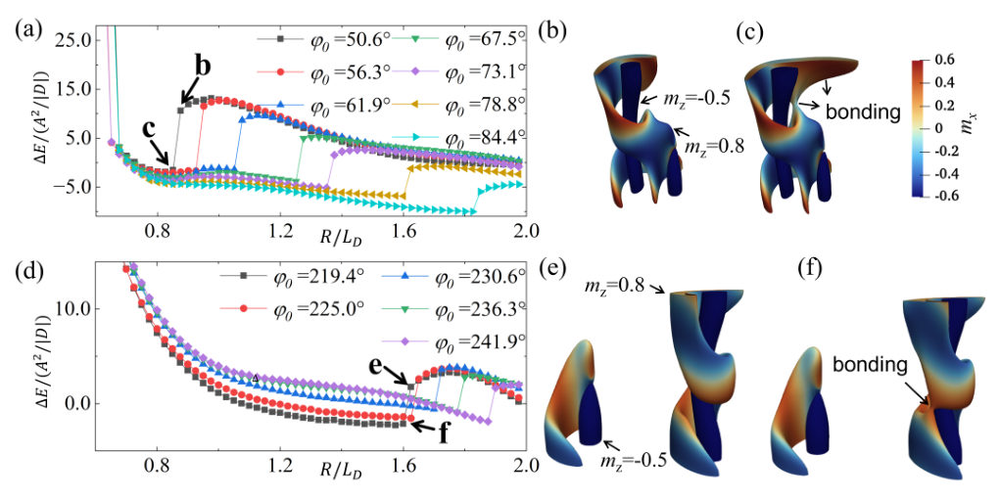
<figcaption class="paper-figure-caption"><b>Fig 3.</b> FIG. 3. Bonding transition and real-space shell reconstruction. (a) Representative bonding-sector energy cuts, with two configurations marked before and after an abrupt jump. (b,c) Corresponding 3D spin configurations. (d) Phase-shifted bonding sector with jumps around R ≃1.6LD. (e,f) Configurations before and after the jump marked in (d). The blue tubes show the mz = −0.5 core isosurfaces, and the colored mz = 0.8 isosurfaces, colored by mx, show the outer distortion shell. In (b,c), the jump forms a bridge-like connection between the upper skyrmion-string shell and the lower bobber–string composite distortion. In (e,f), the bridge-like connection forms mainly within the skyrmion-string...</figcaption>
</figure>
<figure class="paper-figure-card">
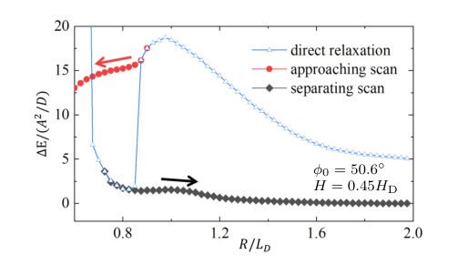
<figcaption class="paper-figure-caption"><b>Fig 4.</b> FIG. 4. Path-dependent relaxation across a representative bonding transition at ϕ0 = 50.6◦and H = 0.45HD, corre- sponding to the cut highlighted in Fig. 3(a). The relative energy ∆E is shown for the direct-relaxation method, the ap- proaching scan, and the separating scan, with arrows indicat- ing the scan directions. The different paths reveal hysteresis- like branch dependence and support the coexistence of un- bonded and bonded locally relaxed states.</figcaption>
</figure>
<figure class="paper-figure-card">
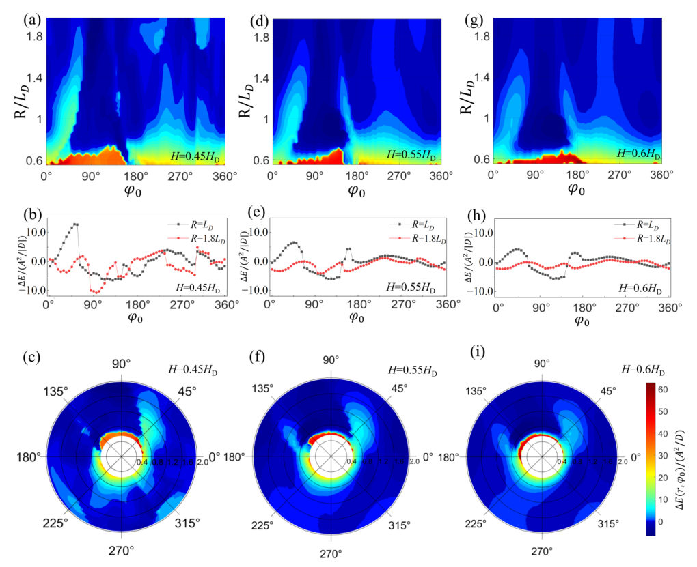
<figcaption class="paper-figure-caption"><b>Fig 5.</b> FIG. 5. Field dependence of the phase-factor-dependent bobber–skyrmion interaction landscape. The three columns cor- respond to H = 0.45HD, 0.55HD, and 0.60HD, respectively. (a,d,g) Contour maps of the relative energy ∆E(R, ϕ0) in the separation–phase-factor plane. (b,e,h) Angular energy profiles at two representative separations, R = LD and R = 1.8LD. (c,f,i) Polar representations of the corresponding energy landscapes, where the radial coordinate is R/LD and the polar angle is ϕ0. Increasing magnetic field suppresses the angular modulation and weakens the bonding sectors.</figcaption>
</figure>
</div>

<p><strong>Summary.</strong> This work analyzes the interaction between chiral bobbers and skyrmion strings in magnetically ordered systems exhibiting a conical phase. Using micromagnetic simulations, the authors demonstrate that this interaction is not merely distance-dependent but is fundamentally controlled by the local surface phase factor ($\phi_0$). This phase control leads to complex energy landscapes featuring distinct bonding regimes arising from structural shell reconstruction.</p>
<p><strong>Why it may be interesting.</strong> The concept of phase-dependent control over magnetic interactions, where a geometric/topological parameter ($\phi_0$) dictates bonding strength rather than simple geometry ($R$), is highly relevant to understanding controlled spin dynamics in advanced spintronic devices and topological materials.</p>
<details>
<summary>Detailed structure</summary>
<p><strong>Main problem.</strong> The study investigates the interaction between a chiral bobber and a skyrmion string, focusing on how this interaction is intrinsically controlled by the local surface phase factor ($\phi_0$) within the conical magnetic phase.</p>
<p><strong>Main result.</strong> The interaction energy landscape cannot be described by a simple distance-dependent potential; instead, it exhibits distinct regimes (repulsive, attractive, bonding) governed by $\phi_0$ due to phase-dependent reconstruction of outer distortion shells.</p>
<p><strong>Method.</strong> Three-dimensional micromagnetic simulations were employed to compute the constrained energy landscape as a function of separation ($R$) and surface phase factor ($\phi_0$).</p>
<p><strong>Model / system.</strong> The system models magnetic materials exhibiting bulk Dzyaloshinskii–Moriya interaction (DMI), supporting 3D topological spin textures like skyrmion strings and chiral bobbers in the conical phase.</p>
<p><strong>Key observables.</strong> Interaction energy landscape $\Delta E(R, \phi_0)$, effective radial force $F_R$, and structural reconstruction of outer distortion shells.</p>
<p><strong>Important parameters / regimes.</strong> Separation distance ($R$), surface phase factor ($\phi_0$), magnetic field strength ($H$), and the conical background direction.</p>
<p><strong>Assumptions / limitations.</strong> Dipolar interactions are excluded from the minimal energy functional to isolate the core mechanism; the analysis assumes that structural reconstruction drives the bonding transitions.</p>
<p><strong>Figures summary.</strong> Figures illustrate contour maps of $\Delta E(R, \phi_0)$, showing distinct regimes based on $\phi_0$; real-space visualizations demonstrate shell reconstruction during bonding; and comparisons show relationships between top/bottom surface interactions via phase mapping.</p>
<p><strong>Paper structure.</strong> The paper establishes the physical problem, details the micromagnetic simulation setup using a minimal energy functional, presents the analysis of fixed-$\phi_0$ energy cuts classifying three regimes (M, NM, Bonding), and concludes by discussing the implications of $\phi_0$ as an active degree of freedom.</p>
</details>
<details>
<summary>Abstract</summary>
<p>Skyrmion interactions govern the formation of skyrmion lattices, clusters, and particle-like growth patterns. In contrast, the interaction between a chiral bobber and a skyrmion string remains largely unexplored, despite the role of bobbers as intermediate states in skyrmion-string formation and annihilation. Here we show that this interaction is intrinsically phase dependent in the conical phase. Using three-dimensional micromagnetic simulations, we compute the locally relaxed constrained energy landscape as a function of the bobber--skyrmion separation $R$ and the surface phase factor $φ_0$. We find that changing $φ_0$ qualitatively reshapes the interaction, producing repulsive, attractive, and bonding-like regimes that cannot be reduced to a conventional distance-dependent potential. Real-space analysis shows that this behavior originates from phase-dependent reconstruction of nonaxisymmetric outer distortion shells. The phase-controlled interaction persists over a finite field range and follows the expected top--bottom phase relation of surface-sensitive conical textures. These results identify the conical phase direction, often hidden in projected or thickness-averaged descriptions, as a previously underappreciated degree of freedom in the interaction between skyrmion strings and finite-length chiral textures, as demonstrated here for chiral bobbers.</p>
</details>
<p><sub><a href="#top">↑ back to top</a></sub></p>

<p><a id="paper-2607.03685"></a></p>
<h3 id="josephson-effects-in-the-spin-triplet-superconductoraltermagnetspin-triplet-superconductor-junctions-the-detection-of-the-intrinsic-math1431math-vector"><a href="http://arxiv.org/abs/2607.03685v1">Josephson effects in the spin-triplet superconductor/altermagnet/spin-triplet superconductor junctions: the detection of the intrinsic $\bf{d}$-vector</a></h3>
<p><strong>Authors:</strong> Ya-Ting Han, Li-Juan Chen, Wen-Ting Liu, Qiang Cheng, Qing-Feng Sun<br>
<strong>Type:</strong> theory · <strong>Category:</strong> other · <strong>PDF:</strong> <a href="https://arxiv.org/pdf/2607.03685v1">https://arxiv.org/pdf/2607.03685v1</a><br>
<strong>Analysis basis:</strong> full PDF text, analyzed in chunks
<strong>Topic relevance:</strong> <code>spintronics-quantum-optics interface</code> <strong>3/5</strong> · <code>Keldysh / 2PI / non-Gaussian methods</code> <strong>1/5</strong></p>
<div class="figure-strip-hint">↔ Scroll figures horizontally</div>
<div class="paper-figures-scroll">
<figure class="paper-figure-card">
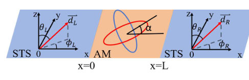
<figcaption class="paper-figure-caption"><b>Fig 1.</b> FIG. 1: Schematic diagram of the STS/AM/STS Josephson junctions. The red arrow in the left (right) STS denotes the vector dL(R). Its direction is characterized by the polar an- gle θL(R) and the azimuthal angle φL(R). The red and blue ellipses represent the Fermi surface in AM. The former is oc- cupied by the spin-down electrons while the latter is occupied by the spin-up electrons. The orientation of AM is defined as the angle α between the major axis of the red ellipse and the interface normal.</figcaption>
</figure>
<figure class="paper-figure-card">

<figcaption class="paper-figure-caption"><b>Fig 2.</b> FIG. 2: Schematic illustration of the two-dimensional square lattice model for the discretization of the STS/AM/STS Josephson junctions.</figcaption>
</figure>
<figure class="paper-figure-card">
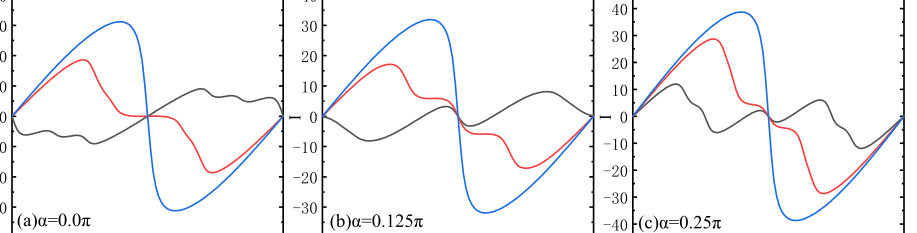
<figcaption class="paper-figure-caption"><b>Fig 3.</b> FIG. 3: The CPRS for different polar angles with (a) α=0.0π, (b) α=0.125π and (c) α=0.25π. The strength of altermagnetism is taken as tJ = 0.5. The black, red, and blue solid lines correspond to θ = 0, 0.3π, and 0.5π, respectively.</figcaption>
</figure>
<figure class="paper-figure-card">
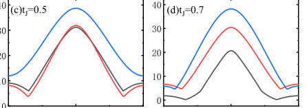
<figcaption class="paper-figure-caption"><b>Fig 4.</b> FIG. 4: The critical current as a function of the polar angle of the d-vector for different orientation angles with (a) tJ = 0.1, (b) tJ = 0.3, (c) tJ = 0.5 and (d) tJ = 0.7. The black, red, and blue solid lines correspond to θ = 0, 0.3π, and 0.5π, respectively.</figcaption>
</figure>
<figure class="paper-figure-card">
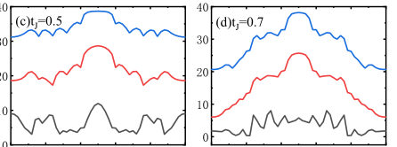
<figcaption class="paper-figure-caption"><b>Fig 5.</b> FIG. 5: The critical current as a function of the orientation angle α of AM for different polar angles with (a) tJ = 0.1, (b) tJ = 0.3 (c) tJ = 0.5 and (d) tJ = 0.7. The black, red, and blue solid lines correspond to θ = 0, 0.3π, and 0.5π, respectively.</figcaption>
</figure>
</div>

<p><strong>Summary.</strong> This theoretical study investigates Josephson junctions formed by spin-triplet superconductors coupled via an altermagnetic material. By calculating the junction's critical current and current-phase relation using Green's functions, the authors demonstrate that these effects are highly sensitive to the direction of the superconductor's d-vector. This provides a promising, non-destructive method for characterizing intrinsic superconducting pairing symmetries.</p>
<p><strong>Why it may be interesting.</strong> This work connects unconventional superconductivity (spin-triplet pairing) with emergent magnetism (altermagnetism). The sensitivity of Josephson coupling to microscopic magnetic structure provides a novel, potentially field-free diagnostic tool for fundamental superconducting properties.</p>
<details>
<summary>Detailed structure</summary>
<p><strong>Main problem.</strong> The primary goal is to develop a method for detecting the intrinsic direction of the d-vector in spin-triplet superconductors (STS). This is achieved by studying Josephson junctions formed between STS and altermagnets (AM).</p>
<p><strong>Main result.</strong> The Josephson current-phase relationships are highly sensitive to the relative orientation of the superconducting d-vectors and the AM magnetization angle, allowing for a robust detection scheme.</p>
<p><strong>Method.</strong> The study employs the Green's function method applied to the Bogoliubov-de Gennes (BdG) Hamiltonian formalism to calculate the Josephson current across the junction.</p>
<p><strong>Model / system.</strong> The model consists of an STS/Altermagnet/STS junction, analyzed using a total Hamiltonian composed of three parts. The AM is advantageous because it possesses zero net macroscopic magnetization while still inducing spin-dependent couplings.</p>
<p><strong>Key observables.</strong> Josephson critical current ($I_c$) and the Current-Phase Relationship (CPR) as functions of superconducting phase difference ($\phi$), d-vector polar angle ($    heta$), and AM orientation angle ($\alpha$).</p>
<p><strong>Important parameters / regimes.</strong> The key variables include the direction of the $\mathbf{d}$-vectors, the altermagnet orientation angle ($\alpha$), and the strength of magnetic coupling ($t_F$ in comparison to ferromagnets).</p>
<p><strong>Assumptions / limitations.</strong> The analysis assumes a lattice model for the junction structure and relies on the Green's function formalism for current calculation.</p>
<p><strong>Figures summary.</strong> Figures schematically illustrate the junction setup, showing $\mathbf{d}$-vector directions relative to the AM Fermi surface. They plot CPRs versus angles and show $I_c$ dependence on these same angular parameters.</p>
<p><strong>Paper structure.</strong> The paper develops the theoretical framework by defining the Hamiltonian for the three components (STS/AM/STS). It then calculates the Josephson current using Green's functions, deriving symmetries and analyzing how the resulting CPRs and critical currents depend systematically on the relative orientations of the superconducting order parameter and the magnetic substrate.</p>
</details>
<details>
<summary>Abstract</summary>
<p>We study the Josephson effects in the spin-triplet superconductor/altermagnet/spin-triplet superconductor junctions using the Green's function method. It is found that the current-phase difference relationships in the junctions strongly depend on the direction of the $\bf{d}$-vectors in the spin-triplet superconductors and the orientation angle of the altermagnet. For the given orientation angle, the $0$-$π$ transition can be obtained when the $\bf{d}$-vector is rotated. The variations of the critical current of the junctions with the direction of the $\bf{d}$-vector, the orientation angle and the strength of altermagnetism are systematically investigated. These Josephson effects can provide the distinguishable information about the direction of the $\bf{d}$-vector. Compared to the existing research, the proposed altermagnetic Josephson junctions can effectively avoid the negative influence of the magnetic field on the $\bf{d}$-vector and can serve as a feasible scheme for the detection of the intrinsic $\bf{d}$-vector. The obtained $0$-$π$ transition in the junctions can also have potential applications in the design of quantum devices.</p>
</details>
<p><sub><a href="#top">↑ back to top</a></sub></p>

<p><a id="paper-2607.04754"></a></p>
<h3 id="observation-of-non-linear-hall-effect-in-polycrystalline-magnetic-multilayes"><a href="http://arxiv.org/abs/2607.04754v1">Observation of Non-linear hall effect in Polycrystalline magnetic multilayes</a></h3>
<p><strong>Authors:</strong> Preet Kamal, Chirag kalouni, Amiya Mondal, Awadesh Narayan, Debangsu Roy<br>
<strong>Type:</strong> both · <strong>Category:</strong> other · <strong>PDF:</strong> <a href="https://arxiv.org/pdf/2607.04754v1">https://arxiv.org/pdf/2607.04754v1</a><br>
<strong>Analysis basis:</strong> full PDF text, analyzed in chunks
<strong>Topic relevance:</strong> <code>spintronics-quantum-optics interface</code> <strong>3/5</strong> · <code>non-equilibrium dynamics</code> <strong>1/5</strong></p>
<div class="figure-strip-hint">↔ Scroll figures horizontally</div>
<div class="paper-figures-scroll">
<figure class="paper-figure-card">
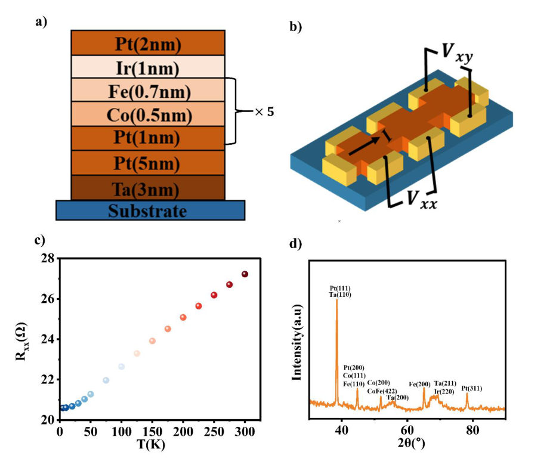
<figcaption class="paper-figure-caption"><b>Fig 1.</b> FIG. 1. Basic characterization of the Ta(3 nm)/Pt(5 nm)/[Ir/Fe/Co/Pt]₅/Pt(2 nm) multilayer device.</figcaption>
</figure>
<figure class="paper-figure-card">

<figcaption class="paper-figure-caption"><b>Fig 2.</b> FIG. 2. (a) Anomalous Hall resistance 𝑅𝑥𝑦 as a function of out-of-plane magnetic field B measured</figcaption>
</figure>
<figure class="paper-figure-card">

<figcaption class="paper-figure-caption"><b>Fig 3.</b> FIG. 3. (a–c) 𝑉𝑥𝑦</figcaption>
</figure>
<figure class="paper-figure-card">

<figcaption class="paper-figure-caption"><b>Fig 4.</b> FIG. 4. (a) Second-harmonic transverse voltage 𝑉𝑥𝑦</figcaption>
</figure>
<figure class="paper-figure-card">
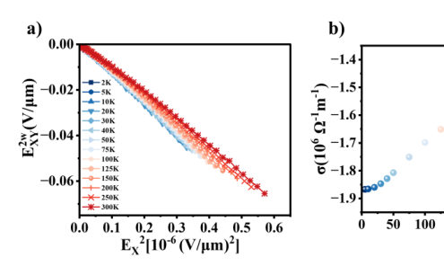
<figcaption class="paper-figure-caption"><b>Fig 5.</b> FIG. 5. (a) Second-order transverse electric field 𝐸𝑥𝑦</figcaption>
</figure>
</div>

<p><strong>Summary.</strong> This work reports the observation of a robust Nonlinear Hall effect in polycrystalline magnetic multilayers, establishing them as a new platform for studying BCD-driven transport. By analyzing second-harmonic signals and confirming symmetry constraints via DFT, the authors prove that the NLHE arises from intrinsic electronic band structure asymmetry rather than extrinsic or quantum-metric effects.</p>
<p><strong>Why it may be interesting.</strong> While primarily condensed matter physics, the study of nonlinear transport phenomena in engineered interfaces touches upon non-equilibrium quantum dynamics. The precise identification of an intrinsic electronic mechanism (BCD) provides a model for understanding how broken symmetries dictate macroscopic electrical responses in solid-state devices.</p>
<details>
<summary>Detailed structure</summary>
<p><strong>Main problem.</strong> The study aims to observe and characterize the Nonlinear Hall effect (NLHE) driven by the Berry curvature dipole (BCD) in technologically relevant magnetic multilayer platforms, extending beyond traditional van der Waals systems.</p>
<p><strong>Main result.</strong> A robust NLHE was observed in polycrystalline magnetic multilayers persisting up to room temperature, confirming that the signal originates from an intrinsic BCD mechanism rather than quantum-metric contributions.</p>
<p><strong>Method.</strong> The research combines transport measurements (measuring second-harmonic transverse voltage) with theoretical analysis using symmetry principles and first-principles DFT calculations.</p>
<p><strong>Model / system.</strong> The physical system is a sputter-deposited polycrystalline magnetic multilayer heterostructure, specifically Ta/Pt/[Ir/Fe/Co/Pt]n/Pt on Si/SiO2. The theory models the NLHE via the Berry curvature dipole (BCD) mechanism in systems lacking inversion symmetry.</p>
<p><strong>Key observables.</strong> Second-harmonic transverse voltage ($V_{xy}^{2\omega}$), second-order Hall conductivity, and the temperature dependence of resistance ($R_{xx}$).</p>
<p><strong>Important parameters / regimes.</strong> Temperature range (2 K to room temperature); applied magnetic field strength ($\pm 2 	ext{ T}$); excitation frequency.</p>
<p><strong>Assumptions / limitations.</strong> The observed signal is assumed to be dominated by the intrinsic BCD mechanism, and the polycrystalline structure's texture dictates the symmetry constraints on the response.</p>
<p><strong>Figures summary.</strong> Figures show layer architecture, Hall bar geometry, $R_{xx}$ vs. temperature (metallic behavior), XRD patterns confirming polycrystalline growth, and plots of $V_{xy}^{2\omega}$ dependence on current, frequency, and magnetic field.</p>
<p><strong>Paper structure.</strong> The paper establishes the experimental observation of NLHE in multilayers, rigorously rules out other sources (frequency/field independence, no third harmonic), uses scaling analysis to isolate the BCD term, and finally supports these findings with DFT calculations that confirm the necessary symmetry breaking for a nonzero BCD moment.</p>
</details>
<details>
<summary>Abstract</summary>
<p>The Nonlinear Hall effect(NLHE) driven principally by the Berry curvature dipole has been established in non-centrosymmetric vander Waals crystals, topological semimetals, and moiré superlattices, but its extension to technologically mature heavy-metal/ferromagnet multilayer platforms remains largely unexplored. Here, we report the observation of a robust NLHE in polycrystalline magnetic multilayers, persisting from 2 K to room temperature. The second-harmonic transverse voltage is independent of both excitation frequency and applied out-of-plane magnetic field, while the vanishingly small third-harmonic response confirms that the observed signal is not dominated by a quantum-metric contribution and instead reflects a genuine second-order electronic response. A scaling analysis of the second-order Hall conductivity against the longitudinal conductivity identifies a dominant, conductivity-independent term establishing the intrinsic berry curvature dipole. Our theoretical analysis, supported by first-principles DFT calculations, further satisfies and corroborates the experimental results. These results establish sputter-deposited polycrystalline thin film as the first engineered magnetic multilayer platform for BCD-driven nonlinear Hall transport, extending the NLHE material landscape beyond van der Waals systems into scalable, industry-compatible thin-film spintronic architectures suitable for high frequency rectifications and nonlinear sensors.</p>
</details>
<p><sub><a href="#top">↑ back to top</a></sub></p>

<p><a id="paper-2607.03954"></a></p>
<h3 id="reentrant-localization-transition-quantum-butterfly-and-robust-edge-modes-in-aperiodic-zig-zag-ladder"><a href="http://arxiv.org/abs/2607.03954v1">Reentrant localization transition, quantum butterfly and robust edge modes in aperiodic zig-zag ladder</a></h3>
<p><strong>Authors:</strong> Sayan Bhattacharya, Rhiddha Acharjee, Atanu Nandy<br>
<strong>Type:</strong> theory · <strong>Category:</strong> disordered systems and neural networks · <strong>PDF:</strong> <a href="https://arxiv.org/pdf/2607.03954v1">https://arxiv.org/pdf/2607.03954v1</a><br>
<strong>Analysis basis:</strong> full PDF text, analyzed in chunks
<strong>Topic relevance:</strong> <code>analog quantum simulation</code> <strong>2/5</strong> · <code>driven-dissipative phase transition</code> <strong>2/5</strong> · <code>Frenkel-Kontorova</code> <strong>1/5</strong> · <code>entanglement &amp; information structure</code> <strong>1/5</strong> · <code>methods for driven-dissipative</code> <strong>1/5</strong> · <code>non-equilibrium dynamics</code> <strong>1/5</strong> · <code>non-equilibrium universality</code> <strong>1/5</strong></p>
<div class="figure-strip-hint">↔ Scroll figures horizontally</div>
<div class="paper-figures-scroll">
<figure class="paper-figure-card">
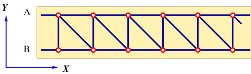
<figcaption class="paper-figure-caption"><b>Fig 1.</b> FIG. 1. A portion of a quasi-one dimensional zig-zag ladder.</figcaption>
</figure>
<figure class="paper-figure-card">

<figcaption class="paper-figure-caption"><b>Fig 2.</b> FIG. 2. (a) and (b) The average inverse participation ra- tio, ⟨IPR⟩, and the average normalized participation ratio, ⟨NPR⟩, with respect to α respectively, for disorder strengths λ0 &lt; t &amp; λ0 &gt; t, where t is the vertical hopping.</figcaption>
</figure>
<figure class="paper-figure-card">

<figcaption class="paper-figure-caption"><b>Fig 3.</b> FIG. 3. (a) IPR intensity distribution in t vs α space, (b) phase diagram of η in t vs α space, and fractal dimension in E vs α plane with (c) t⟨λ0 and (d) t⟩λ0.</figcaption>
</figure>
<figure class="paper-figure-card">

<figcaption class="paper-figure-caption"><b>Fig 4.</b> FIG. 4. Time evolution of the mean square displacement (MSD) for three representative values of the slowness expo- nent α with the quasiperiodic modulation parameter fixed at the golden mean, Q = (1 + √</figcaption>
</figure>
<figure class="paper-figure-card">
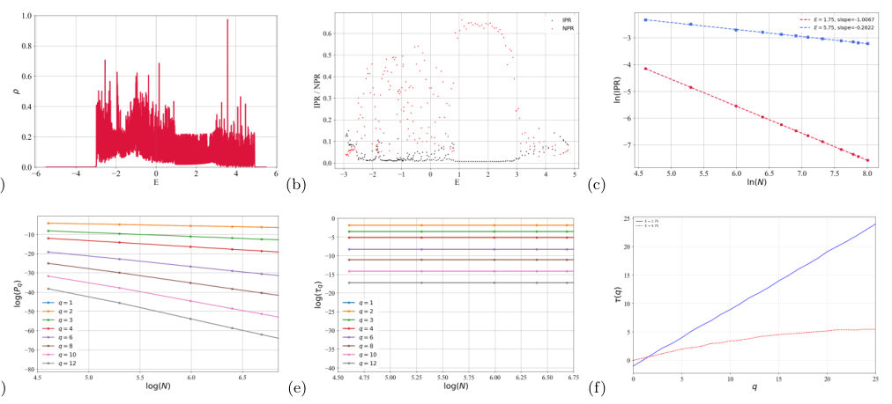
<figcaption class="paper-figure-caption"><b>Fig 5.</b> FIG. 5. (a) Variation of density of states with energy (b) inverse participation ratio with energy (c) variation of IPR with system size, (d)-(f) MFA spectrum for E = 1.75 (extended state) and E = 3.75 (critical state). The finite-size scaling yields slopes of −1.0067 for the extended state and 0.2622 for the critical state.</figcaption>
</figure>
</div>

<p><strong>Summary.</strong> This work analyzes a quasiperiodic zig-zag ladder model to reveal a reentrant localization transition driven by kinetic parameter tuning. Using advanced diagnostics like IPR and multifractal analysis, the authors demonstrate that delocalized states can reappear in regimes previously thought localized. Furthermore, they identify robust edge modes whose existence is mapped onto the system's quantum butterfly spectrum.</p>
<p><strong>Why it may be interesting.</strong> The study provides detailed diagnostics (IPR, multifractals, dynamics) for understanding how subtle changes in Hamiltonian parameters can induce complex phase transitions (re-entrant localization) beyond simple disorder effects, which is relevant to engineered quantum materials.</p>
<details>
<summary>Detailed structure</summary>
<p><strong>Main problem.</strong> The study investigates reentrant localization transitions, quantum butterfly patterns, and robust edge modes in quasiperiodic lattices.</p>
<p><strong>Main result.</strong> The system exhibits a re-emerging delocalization phase controlled by kinetic parameters, alongside the formation of robust edge states resistant to moderate disorder.</p>
<p><strong>Method.</strong> Analysis employs diagnostics like Inverse Participation Ratio (IPR), Mean Square Displacement (MSD) scaling ($  ext{MSD} \sim t^\mu$), and multifractal analysis ($I_q$) across phase diagrams.</p>
<p><strong>Model / system.</strong> The model is a quasi-one dimensional zig-zag ladder network governed by a tight-binding Hamiltonian incorporating a quasiperiodic Aubry-Andre Harper (AAH) modulation in the long-range hopping integral.</p>
<p><strong>Key observables.</strong> Inverse Participation Ratio ($ ext{IPR}<em ext_edge="ext{edge">n$), Normalized Participation Ratio ($  ext{NPR}_n$), transport exponent ($\mu$), edge probability ($P</em>$), and the phase diagram parameter $\eta$.}</p>
<p><strong>Important parameters / regimes.</strong> The slowness index ($\alpha$) controls the transition, alongside the ratio of hopping strengths ($t/\lambda_0$) and disorder strength ($W_d$).</p>
<p><strong>Assumptions / limitations.</strong> The analysis assumes the validity of multifractal scaling techniques for characterizing quantum phases in quasiperiodic systems.</p>
<p><strong>Figures summary.</strong> Figures illustrate IPR intensity plots showing delocalized patches, MSD vs. time curves demonstrating different transport regimes ($\mu$), and maps correlating edge probability onto the quantum butterfly spectrum.</p>
<p><strong>Paper structure.</strong> The paper systematically analyzes localization diagnostics (IPR/NPR) to map out a reentrant phase diagram controlled by $\alpha$, followed by dynamical studies using MSD and multifractal analysis, culminating in the identification of robust edge modes via $P_{	ext{edge}}$ mapping onto the spectrum.</p>
</details>
<details>
<summary>Abstract</summary>
<p>Low dimensional tight-binding lattices in presence of quasiperiodic disorder generally exhibits localization transition. The system supports diffusive modes upto a limiting strength of disorder and all the eigenstates become localized beyond that critical strength thereby quenching the kinetic signature of the wavepacket. However, moving away from this situation, we demonstrate that with minimal long-range off-diagonal modulation, the eigenspectrum again may offer delocalization of electronic states for some subtle combination of kinetic parameters of the Hamiltonian leading to a second quantum phase change. The localization transitions are associated with the obvious presence of single-particle mobility edges. Multifractal energy landscape also shows quantum butterfly pattern with the in-gap robust edge modes. The re-emerging localization transition is manifested through the evaluation of inverse participation ratio, eigenspectrum and a pertinent quantum dynamical study.</p>
</details>
<p><sub><a href="#top">↑ back to top</a></sub></p>

<p><a id="paper-2607.05039"></a></p>
<h3 id="coexisting-charge-density-wave-and-superconducting-order-in-quantizing-magnetic-fields"><a href="http://arxiv.org/abs/2607.05039v1">Coexisting Charge Density Wave and Superconducting Order in Quantizing Magnetic Fields</a></h3>
<p><strong>Authors:</strong> Ron Q. Nguyen, Peiyu Qin, Hai-Tian Wu, Sparsh Mishra, Tobias Wolf, Joseph Roll, Erin Morissette, Naiyuan J. Zhang, Sarah Alkidim, Kenji Watanabe, Takashi Taniguchi, Aaron W. Hui, Dima E. Feldman, Allan MacDonald, J. I. A. Li<br>
<strong>Type:</strong> experiment · <strong>Category:</strong> strongly correlated electrons · <strong>PDF:</strong> <a href="https://arxiv.org/pdf/2607.05039v1">https://arxiv.org/pdf/2607.05039v1</a><br>
<strong>Analysis basis:</strong> full PDF text, analyzed in chunks
<strong>Topic relevance:</strong> <code>analog quantum simulation</code> <strong>2/5</strong> · <code>driven-dissipative phase transition</code> <strong>2/5</strong> · <code>Frenkel-Kontorova</code> <strong>1/5</strong> · <code>non-equilibrium dynamics</code> <strong>1/5</strong></p>
<div class="figure-strip-hint">↔ Scroll figures horizontally</div>
<div class="paper-figures-scroll">
<figure class="paper-figure-card">
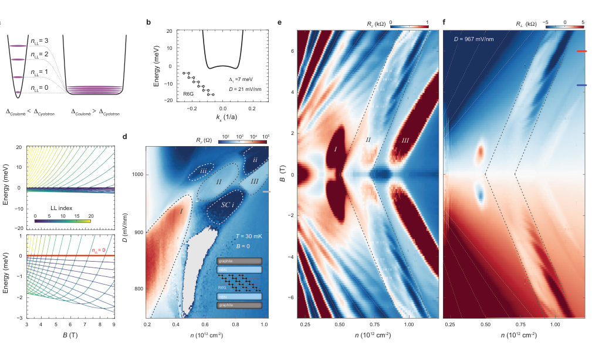
<figcaption class="paper-figure-caption"><b>Fig 1.</b> FIG. 1. LL formation at the flat-band edge. (a) Schematic illustration of LL formation in a dispersive band (left) and near a flat-band edge (right). The flat-band edge enhances mixing among nearly degenerate LLs. (b) Conduction-band dispersion of R6G calculated using Slonczewski–Weiss–McClure (SWMc) parameters γ0 and γ1 [44]. This simplified band-structure calculation neglects trigonal warping and other higher-order hopping terms (see Fig. M1d for a more realistic calculation). (c) Landau-level spectrum derived from the band structure shown in (b), obtained using the continuum model [45]. The bottom panel displays a zoomed-in view of the low-energy edge of the spectrum. (d) n–D map of the...</figcaption>
</figure>
<figure class="paper-figure-card">
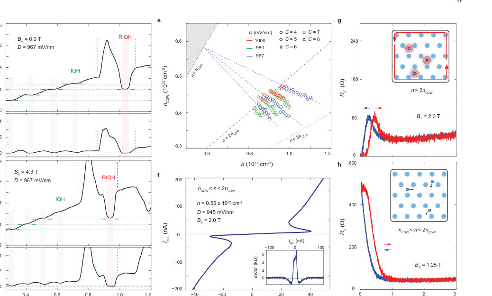
<figcaption class="paper-figure-caption"><b>Fig 2.</b> FIG. 2. Two limits of CDW order. (a–d) Transverse and longitudinal conductivities, σxy (a, c) and σxx (b, d), as functions of carrier density measured at D = 967 mV/nm and perpendicular magnetic fields of (a, b) B⊥= 6 T, and (c, d) 4.3 T, along the horizontal cuts indicated in Fig. 1e–f. Green and red shaded regions denote conventional quantum Hall states and re-entrant integer quantum Hall states, respectively. (e) Number of carriers incorporated into the CDW order, nCDW, as a function of the total carrier density, n. The dashed, dash-dotted, and dotted lines denote n = nCDW, n = 2nCDW, and n = 3nCDW, respectively. RIQH states are observed only at 2nCDW &lt; n &lt; 3nCDW. The gray-shaded region...</figcaption>
</figure>
<figure class="paper-figure-card">
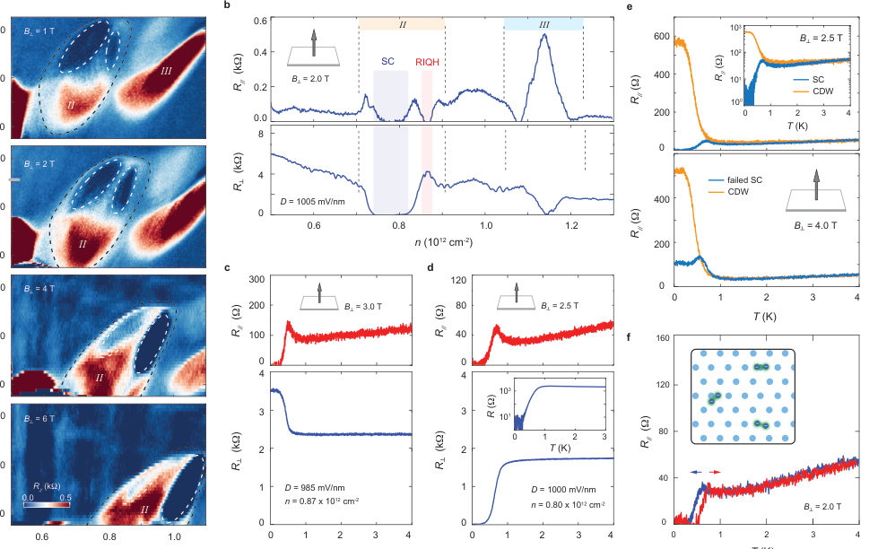
<figcaption class="paper-figure-caption"><b>Fig 3.</b> FIG. 3. Superconductivity emerging from LL formation. (a) n–D maps of R∥measured at fixed perpendicular magnetic fields B⊥. (b) Line cut of the longitudinal (top) and transverse (bottom) resistance as a function of n, measured at D = 990 mV/nm and B⊥= 2 T, corresponding to the horizontal gray bar in panel (a). Vertical dashed lines mark the density ranges of regimes II and III. Within regime II, two distinct low-temperature phases emerge from the CDW background: a RIQH state, and superconductivity (SC), marked by vanishing longitudinal resistance. (c, d) Temperature dependence of the longitudinal (top) and transverse (bottom) resistance measured in (c) the RIQH state and (d) the...</figcaption>
</figure>
<figure class="paper-figure-card">

<figcaption class="paper-figure-caption"><b>Fig 4.</b> FIG. 4. I–V characteristics. (a) Longitudinal differential resistance, dV∥/dI, as a function of Id.c. and n across regimes II and III, measured at B⊥= 2 T and D = 1005 mV/nm. (b, c) Differential resistance measured as a function of Id.c. in the longitudinal (top) and transverse (bottom) channels at the (b) superconducting and (c) RIQH states, respectively, with locations indicated by the white dashed lines in panel (a). (d) Temperature dependence of R∥measured in the CDW (orange) and superconducting (blue) states in regime I. (e, f) R∥–T traces measured during cooling (blue) and warming (red) for the same (e) CDW and (f) superconducting states shown in panel (d).</figcaption>
</figure>
</div>

<p><strong>Summary.</strong> This work explores the coexistence of Charge Density Wave order and superconductivity in graphene under strong magnetic fields. By mapping out phase diagrams using transport measurements, the authors reveal that SC persists deep within the quantum Hall regime, suggesting a profound interplay between charge ordering and pairing mechanisms.</p>
<p><strong>Why it may be interesting.</strong> The strong coupling between CDW formation (a charge ordering phenomenon) and superconductivity in a magnetic field provides a rich platform for studying competing orders in strongly correlated electron systems, relevant to high-Tc superconductors.</p>
<details>
<summary>Detailed structure</summary>
<p><strong>Main problem.</strong> The study investigates the complex interplay between Charge Density Wave (CDW) order, Superconductivity (SC), and Quantum Hall Effects (QHE) in a highly tunable electronic system.</p>
<p><strong>Main result.</strong> The research demonstrates that SC and CDW phases coexist within the quantum Hall regime of rhombohedral hexalayer graphene, with the superconducting state persisting deep inside the QHE region.</p>
<p><strong>Method.</strong> Transport measurements ($   ext{R}\parallel$, $ ext{R}\perp$) are used across varying carrier densities ($n$), displacement fields ($D$), and perpendicular magnetic fields ($B_\perp$).</p>
<p><strong>Model / system.</strong> The physical platform is rhombohedral hexalayer graphene (R6G), which is tuned using a large displacement field to generate flat band edges, enabling strong Landau level mixing.</p>
<p><strong>Key observables.</strong> Integer Quantum Hall plateaus ($\sigma_{xy}$), vanishing longitudinal/transverse resistance ($R_{\parallel}, R_{\perp}$ for SC), and pronounced thermal hysteresis associated with CDW transitions.</p>
<p><strong>Important parameters / regimes.</strong> Strong magnetic fields ($B > 2	ext{T}$), flat-band edge physics, carrier density ($n$), and displacement field ($D$).</p>
<p><strong>Assumptions / limitations.</strong> The analysis focuses on the regime where Landau level mixing is strong near the flat-band edge.</p>
<p><strong>Figures summary.</strong> Figures map out phase diagrams in $n-D$ space showing distinct SC pockets alongside regions exhibiting Re-entrant Integer Quantum Hall (RIQH) states, with temperature dependence revealing hysteresis linked to CDW melting.</p>
<p><strong>Paper structure.</strong> The paper systematically maps the phase diagram by measuring transport properties ($\sigma_{xx}, \sigma_{xy}$) as a function of $n$ and $D$, identifying boundaries between insulating/CDW, QHE, and superconducting states. The analysis is refined using temperature sweeps and current-voltage characteristics to confirm first-order transitions.</p>
</details>
<details>
<summary>Abstract</summary>
<p>Charge density wave (CDW) and superconductivity are both common in strongly interacting electron systems. While CDW order is ubiquitous in both quantum Hall systems and unconventional superconductors, superconductivity is generally suppressed by the strong magnetic fields required for Landau quantization. Here we investigate the intertwined CDW and superconducting phases of rhombohedral hexalayer graphene (R6G) in a large displacement field, which generates tunable flat band edges, and a strong magnetic field, which generates a manifold of nearly degenerate Landau levels. CDW order is accompanied by pronounced thermal hysteresis as expected for first-order melting transitions. Surprisingly, we find a series of strong integer quantum Hall effects at magnetic fields above ~2T with Hall conductance quantum numbers that deviate strongly from nearby integer filling factors, an observation that can be explained only by CDW order that mixes many Landau levels. We also find a nearby superconducting phase that is stabilized by perpendicular magnetic fields and persists deep within the quantum Hall regime. The CDW and superconducting phases develop on comparable temperature scales and emerge from the same manifold of strongly mixed Landau levels. These observations provide new insight into the interplay between superconductivity and CDW order in R6G at zero magnetic field.</p>
</details>
<p><sub><a href="#top">↑ back to top</a></sub></p>

<p><a id="paper-2607.03938"></a></p>
<h3 id="on-the-structure-of-black-hole-interior-in-a-model-of-scalar-quasi-particles-within-the-gr-framework"><a href="http://arxiv.org/abs/2607.03938v1">On the structure of black hole interior in a model of scalar quasi-particles within the GR framework</a></h3>
<p><strong>Authors:</strong> S. Bondarenko<br>
<strong>Type:</strong> theory · <strong>Category:</strong> statistical mechanics · <strong>PDF:</strong> <a href="https://arxiv.org/pdf/2607.03938v1">https://arxiv.org/pdf/2607.03938v1</a><br>
<strong>Analysis basis:</strong> full PDF text, analyzed in chunks
<strong>Topic relevance:</strong> <code>non-equilibrium dynamics</code> <strong>2/5</strong> · <code>non-equilibrium universality</code> <strong>2/5</strong> · <code>Keldysh / 2PI / non-Gaussian methods</code> <strong>1/5</strong> · <code>driven-dissipative phase transition</code> <strong>1/5</strong></p>
<div class="figure-strip-hint">↔ Scroll figures horizontally</div>
<div class="paper-figures-scroll">
<figure class="paper-figure-card">
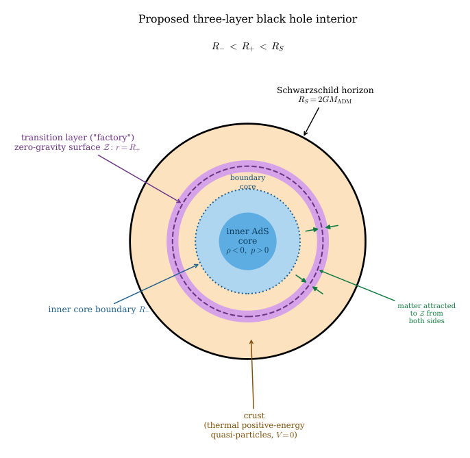
<figcaption class="paper-figure-caption"><b>Fig 1.</b> FIG. 1. Schematic structure of the proposed black hole interior. The radial ordering is R−&lt; R+ &lt; RS: the inner AdS-like core with negative energy density (ρ &lt; 0, p &gt; 0) and its boundary-core shell are enclosed within R−; the transition layer (the ”factory”), which approximately coincides with the zero-gravity hypersurface Z : r = R+, attracts the regular matter from both sides and repels the negative-energy bubbles; the thermal positive-energy crust (V = 0) fills the region up to the Schwarzschild horizon at RS = 2 G MADM.</figcaption>
</figure>
<figure class="paper-figure-card">
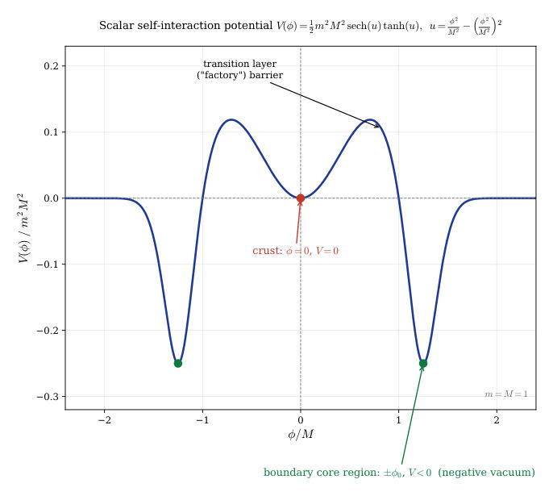
<figcaption class="paper-figure-caption"><b>Fig 2.</b> FIG. 2. The scalar self-interaction potential V (ϕ) of Eq. (3), plotted at m = M = 1 (with ϕ in units of M and V in units of m2M 2). The quasi-stable minimum at ϕ = 0 with V = 0 corresponds to the crust; the two symmetric negative minima at ±ϕ0 with V &lt; 0 correspond to the negative-energy boundary core region; the barrier separating the wells is associated with the transition layer (”factory”).</figcaption>
</figure>
<figure class="paper-figure-card">
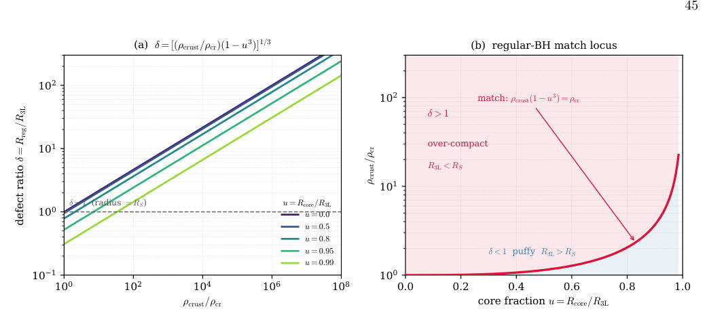
<figcaption class="paper-figure-caption"><b>Fig 3.</b> FIG. 3. (a) Defect ratio δ = Rreg/R3L versus the density contrast ρcrust/ρcr, for several core fractions u = Rcore/R3L; the cube-root scaling and the δ = 1 reference (dashed) are shown. (b) The regular-BH match locus in the (u, ρcrust/ρcr) plane, separating the over-compact region (δ &gt; 1, R3L &lt; RS) from the defective/puffy region (δ &lt; 1, R3L &gt; RS).</figcaption>
</figure>
</div>

<p><strong>Summary.</strong> This paper proposes a novel, singularity-free model for black hole interiors using a scalar field described in three distinct layers: crust, transition layer, and negative energy core. It treats the entire process of BH formation and evaporation as a quasi-static thermodynamic cycle driven by the negative energy core. The work successfully unifies these disparate physical regimes within a single field theoretical framework.</p>
<p><strong>Why it may be interesting.</strong> While focused on GR, the explicit use of negative temperature concepts ($eta$) to describe the core condensate and modeling BH evaporation as an 'almost adiabatic thermodynamic engine' connects directly to advanced non-equilibrium statistical mechanics principles.</p>
<details>
<summary>Detailed structure</summary>
<p><strong>Main problem.</strong> To construct an effective, singularity-free model for the interior of a black hole (BH) that addresses thermodynamic issues like entropy and information loss during evaporation.</p>
<p><strong>Main result.</strong> The BH interior is modeled as a three-layer structure (core, transition layer, crust), where Hawking evaporation can be viewed as a quasi-static cycle analogous to an adiabatic thermodynamic engine.</p>
<p><strong>Method.</strong> Solving the static Einstein equations using an effective scalar field description and applying concepts from thermodynamics, including negative temperature notions for the core condensate.</p>
<p><strong>Model / system.</strong> The system uses a non-linear self-interacting scalar field ($\phi$) to describe three distinct regions: a positive-energy crust of thermal excitations, a transition layer acting as a 'factory,' and an AdS-type core characterized by negative energy density. The structure is governed by matching conditions across these layers.</p>
<p><strong>Key observables.</strong> Metric components, mass functions, energy densities ($
ho$), pressures ($p$), and the two-temperature thermodynamics linking kinetic excitations to the ground state.</p>
<p><strong>Important parameters / regimes.</strong> The Schwarzschild radius ($r=2GM_{	ext{ADM}}$), negative inverse temperature parameter ($eta$), and the quasi-particle density in each layer.</p>
<p><strong>Assumptions / limitations.</strong> The model assumes a static configuration, uses an effective scalar field to unify core/crust descriptions, and treats BH evaporation as a reversible thermodynamic cycle.</p>
<p><strong>Figures summary.</strong> Figures schematically illustrate the radial ordering of the three layers ($R_- < R^+ < R_S$) and show the potential energy landscape $V(\phi)$ defining the boundaries between these regions.</p>
<p><strong>Paper structure.</strong> The paper develops the structure by first proposing the three-layer model, then solving the static Einstein equations for each layer using quasi-particle thermodynamics (WKB approximation), establishing matching conditions at the transition layer, and finally interpreting the entire process as a thermodynamic cycle.</p>
</details>
<details>
<summary>Abstract</summary>
<p>We propose an effective, singularity-free model of the black hole interior described entirely by a scalar field with a non-linear self-interaction potential. The interior consists of three layers -- a core, a transition layer, and a crust -- each fixed by the local quasi-particle density and the corresponding extremum of the potential of the field. The crust is a layer of massive, positive-energy thermal excitations above the zero-potential well, beneath a genuine Schwarzschild horizon at $r = 2GM_{\rm ADM}$. The core is an AdS-type region of negative energy density, it simulates a condensate of quasi-particles which carry zero classical kinetic energy and form a negative potential well governed by a negative inverse temperature parameter. The two regions are joined through Israel matching across the transition layer, which sits at an approximately null-gravity hypersurface of maximal regular matter density and where both the sign of the energy density and the type of thermal excitations change. Solving the static Einstein equations, we obtain the metric and mass functions of each layer, the edge equation of state of the crust, the linear stability condition of the null-gravity surface for ordinary and effectively negative mass matter, and the two-temperature thermodynamics linking the kinetic excitations to the negative temperature ground state. The framework unifies core and crust within a single field description and highlights the role of the negative energy AdS core and the associated negative temperature notion in describing black hole interior. In this picture the formation and Hawking evaporation of a black hole appear as a quasi-static cycle of an almost adiabatic thermodynamic engine, with the negative energy core as the working substance.</p>
</details>
<p><sub><a href="#top">↑ back to top</a></sub></p>

<p><a id="paper-2607.04097"></a></p>
<h3 id="full-gate-voltage-control-of-a-parity-protected-superconducting-qubit-with-an-altermagnetic-josephson-junction"><a href="http://arxiv.org/abs/2607.04097v1">Full Gate-Voltage Control of a Parity-Protected Superconducting Qubit with an Altermagnetic Josephson Junction</a></h3>
<p><strong>Authors:</strong> Guo-Liang Guo<br>
<strong>Type:</strong> theory · <strong>Category:</strong> quantum information and computing · <strong>PDF:</strong> <a href="https://arxiv.org/pdf/2607.04097v1">https://arxiv.org/pdf/2607.04097v1</a><br>
<strong>Analysis basis:</strong> full PDF text, analyzed in chunks
<strong>Topic relevance:</strong> <code>QC/QI experiment</code> <strong>2/5</strong> · <code>exotic spin models in light-matter</code> <strong>1/5</strong> · <code>spintronics-quantum-optics interface</code> <strong>1/5</strong></p>
<div class="figure-strip-hint">↔ Scroll figures horizontally</div>
<div class="paper-figures-scroll">
<figure class="paper-figure-card">
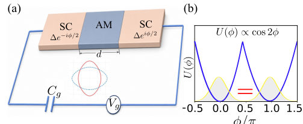
<figcaption class="paper-figure-caption"><b>Fig 1.</b> FIG. 1. (a) The setup of AM Josephson junction, AM with superconductors on both ends, ϕ the superconducting phase difference, the red and blue curves are the Fermi surface of AM. (b) The potential shape (blue line) in π periodic, wave- function (light yellow) and energy levels (red lines) of AM Josephson junction at the 0 −π point.</figcaption>
</figure>
<figure class="paper-figure-card">
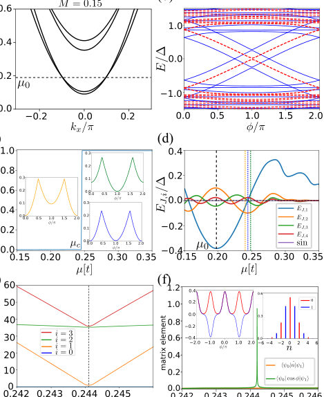
<figcaption class="paper-figure-caption"><b>Fig 2.</b> FIG. 2. (a) Band structure of the AM with periodic bound- ary conditions along the x direction. µ0 marks zero Cooper- pair center-of-mass momentum. (b) Andreev bound-state spectrum at µ = µ0 (q = 0, red) and away from µ0 (finite q, blue). (c) The minimal point of the Josephson potential changes with µ, insets shows the Josephson potential shape near the 0 −π transition point, corresponding to the vertical lines of the same color in (d). (d) Leading Josephson har- monics versus µ. (e) The energy spectrum E0i, (i = 0, 1, 2, 3) changes with chemical potential near the 0-π transition point. (f) The transition matrix element changes with µ near the 0−π transition point, insets show the lowest...</figcaption>
</figure>
<figure class="paper-figure-card">

<figcaption class="paper-figure-caption"><b>Fig 3.</b> FIG. 3. (a) At the 0 −π transition point, E01 change along with the variation of Ec, red dashed line is plotted with Eq. (8). Inset shows the E01 changes with the chem- ical potential near the 0 −π transition point with different Ec (b) At the 0 −π transition point, the second derivative ∂2E01/∂µ2, ∂2E01/∂n2 g as a function of Ec. (c) and (d) T1 and T2 vary with Ec.</figcaption>
</figure>
<figure class="paper-figure-card">
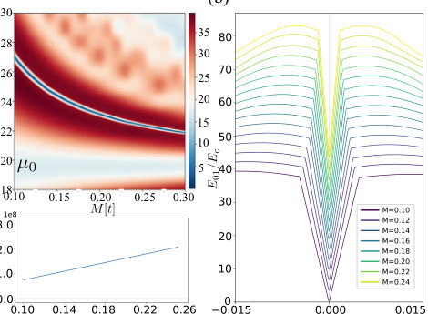
<figcaption class="paper-figure-caption"><b>Fig 4.</b> FIG. 4. (a) Qubit transition energy E01 as a function of chemical potential µ and altermagnetic splitting strength M. (b) Waterfall plot of E01 versus µ near the 0-π transition for several values of M. (c) Second derivative of the qubit transition energy with respect to chemical potential, Dµ 2 = ∂2E01/∂µ2|µ=µc, evaluated at the critical chemical potential µc for the 0-π transition, as a function of M.</figcaption>
</figure>
<figure class="paper-figure-card">

<figcaption class="paper-figure-caption"><b>Fig 5.</b> FIG. 5. (a) and (b) shows the Fourier coefficients EJ,1, EJ,2 change with chemical potential and AM strength M.</figcaption>
</figure>
</div>

<p><strong>Summary.</strong> This paper proposes using an altermagnetic Josephson junction to create a parity-protected superconducting qubit. By exploiting the momentum-dependent spin splitting in the altermagnet, the system can be tuned electrically through a 0-$\pi$ transition, generating a double-well potential for robust quantum states. This approach promises scalable, all-electrical control with coherence times suitable for quantum computing applications.</p>
<p><strong>Why it may be interesting.</strong> This work directly addresses hardware implementation challenges in superconducting qubits by proposing a novel material platform (altermagnets) that enables all-electrical, flux-noise-free control necessary for scalable quantum computation.</p>
<details>
<summary>Detailed structure</summary>
<p><strong>Main problem.</strong> The challenge is developing superconducting qubits with long coherence times that avoid problematic magnetic-flux biasing.</p>
<p><strong>Main result.</strong> The authors propose using an altermagnetic Josephson junction to create a parity-protected qubit operable entirely through gate voltages, achieving estimated coherence times of tens of milliseconds.</p>
<p><strong>Method.</strong> Theoretical modeling involving the tight-binding Hamiltonian and Andreev level calculations are used to analyze the junction's energy spectrum as it passes through a 0-$\pi$ transition point.</p>
<p><strong>Model / system.</strong> The system is a superconducting qubit built around an Altermagnet Josephson Junction (SC–AM–SC). The AM provides spin-dependent functionality without external fields, allowing electrical control over the junction's phase and potential.</p>
<p><strong>Key observables.</strong> Cooper-pair parity ($\langle\hat{P}
angle$), Qubit splitting ($E_{01}$), Coherence times ($T_2$, $T_\mu$).</p>
<p><strong>Important parameters / regimes.</strong> Gate voltages controlling chemical potential ($\mu$) and offset charge ($n_g$); Josephson energy harmonics ($E_{J,1}, E_{J,2}$).</p>
<p><strong>Assumptions / limitations.</strong> The analysis relies on specific limits such as the 1D approximation for the AM region and assuming realistic material parameters for gate compatibility.</p>
<p><strong>Figures summary.</strong> Figure 1 illustrates the physical setup and potential shape at the $0-\pi$ point; Figure 2 demonstrates how tuning $\mu$ drives the junction through a double-well landscape by suppressing the first Josephson harmonic.</p>
<p><strong>Paper structure.</strong> The paper introduces the problem, details the SC–AM–SC model using theoretical derivations (Appendix A) and numerical simulations (Appendix B), analyzes the resulting qubit Hamiltonian and control mechanisms, and concludes with performance estimates for coherence times.</p>
</details>
<details>
<summary>Abstract</summary>
<p>Parity-protected superconducting qubits offer intrinsically long coherence, but many current implementations require magnetic-flux biasing, which introduces flux noise, control overhead, and limited scalability. Here we propose a parity-protected qubit based on a gate-tunable superconductor-altermagnet-superconductor Josephson junction. Altermagnets are compensated magnets with momentum-dependent spin splitting and zero net magnetization, providing spin-dependent functionality without external magnetic fields. In the proposed junction, the two spin sectors acquire opposite phase shifts, generating two Josephson channels whose interference is controlled electrically by the chemical potential. At the tuned $0$-$π$ transition, the first Josephson harmonic is strongly suppressed while the second harmonic dominates, yielding a double-well potential with two nearly degenerate states of opposite Cooper-pair parity. For realistic gatemon-compatible parameters, we estimate coherence times of up to tens of milliseconds while maintaining fully gate-controlled qubit operations. These results establish altermagnetic Josephson junctions as a promising route toward protected superconducting qubits with local, scalable, and all-electrical control.</p>
</details>
<p><sub><a href="#top">↑ back to top</a></sub></p>

<p><a id="paper-2607.04970"></a></p>
<h3 id="functionalization-of-math1499math-wave-altermagnets-spin-splitter-effect-enabled-by-surfaces"><a href="http://arxiv.org/abs/2607.04970v1">Functionalization of $g$-wave altermagnets: spin-splitter effect enabled by surfaces</a></h3>
<p><strong>Authors:</strong> Sopheak Sorn<br>
<strong>Type:</strong> theory · <strong>Category:</strong> other · <strong>PDF:</strong> <a href="https://arxiv.org/pdf/2607.04970v1">https://arxiv.org/pdf/2607.04970v1</a><br>
<strong>Analysis basis:</strong> full PDF text, analyzed in chunks
<strong>Topic relevance:</strong> <code>Keldysh / 2PI / non-Gaussian methods</code> <strong>1/5</strong> · <code>analog quantum simulation</code> <strong>1/5</strong> · <code>exotic spin models in light-matter</code> <strong>1/5</strong> · <code>spintronics-quantum-optics interface</code> <strong>1/5</strong></p>
<div class="figure-strip-hint">↔ Scroll figures horizontally</div>
<div class="paper-figures-scroll">
<figure class="paper-figure-card">

<figcaption class="paper-figure-caption"><b>Fig 1.</b> FIG. 1. Schematic illustration of a bulk g-wave altermag- net in a slab geometry supporting surface d-wave spin split- ting, thereby enabling the concomitant spin splitter effect— generation of transverse spin current upon applying a longi- tudinal charge current. This gives rise to the charge-to-spin conversion capability that is absent in the bulk.</figcaption>
</figure>
<figure class="paper-figure-card">

<figcaption class="paper-figure-caption"><b>Fig 2.</b> FIG. 2. Panel (a) illustrates the crystal structure of the (210) surface of the g-wave AM model, which is inspired by the CrSb crystal. The box enclosed by the dashed lines represents the unit cell of the bulk. Blue and red spheres correspond to magnetic sublattices which host the N´eel vector N ∥ˆz in the altermagnetic state. Green spheres represent the nonmagnetic sites. The bulk lattice vectors are a1 = a(1, 0, 0)T , a2 = a(−1/2, √</figcaption>
</figure>
<figure class="paper-figure-card">

<figcaption class="paper-figure-caption"><b>Fig 3.</b> FIG. 3. Spin-splitter angle as a function of the chemical po- tential µ for (210)-oriented slab geometry with different thick- nesses, including 11l0, 26l0, 51l0, and 81l0, characterizing (a) the efficiency in generating a transverse Sz-spin current along z-axis upon applying charge current along y-axis and (b) the efficiency in generating a transverse Sz-spin current along y- axis upon applying charge current along z-axis.</figcaption>
</figure>
<figure class="paper-figure-card">
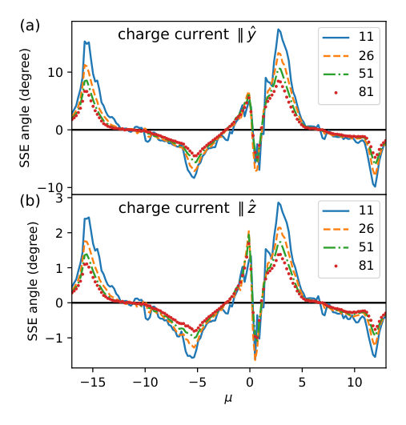
<figcaption class="paper-figure-caption"><b>Fig 4.</b> Figure 2(c) shows SSE σSz,s yz as a function of the chem- ical potential µ for (210) slabs with different thicknesses, including 11l0, 26l0, 51l0 and 81l0, where l0 is defined in Fig.2(a). Indeed, our results confirm the existence of SSE that accompanies the surface-induced d-wave char- acter. We observe that σSz,s yz increases upon increasing the thickness of the slab. However, to meaningfully ex- amine the charge-to-spin conversion efficiency, we com- pare the SSE with the longitudinal charge conductivity by calculating the following SSE angle [5, 16]</figcaption>
</figure>
<figure class="paper-figure-card">
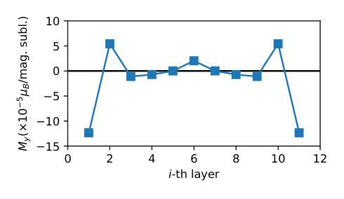
<figcaption class="paper-figure-caption"><b>Fig 5.</b> FIG. 4. Layer-resolved y-component of the spin magnetiza- tion associated with the weak ferromagnetism in the slab with thickness 11l0. Here, we have chosen a particular value of the chemical potential µ, as specified in SMs.</figcaption>
</figure>
</div>

<p><strong>Summary.</strong> This theoretical work investigates how surfaces can functionalize $g$-wave altermagnets by inducing d-wave magnetic order. Using the Kubo formalism on a minimal slab model, the authors calculate a finite spin-splitter effect (SSE) originating solely from these surfaces. This suggests that thin-film engineering is a viable strategy to harness novel spintronic functionalities in complex magnetic materials.</p>
<p><strong>Why it may be interesting.</strong> While focused on condensed matter magnetism, the concept of boundary states inducing novel electronic responses (like SSE) via symmetry breaking is relevant to understanding topological phenomena in engineered quantum materials.</p>
<details>
<summary>Detailed structure</summary>
<p><strong>Main problem.</strong> The study aims to demonstrate that surface effects can induce a spin-splitter effect (SSE) in $g$-wave altermagnets, overcoming the difficulty of finding bulk metallic d-wave AMs.</p>
<p><strong>Main result.</strong> A finite SSE is found at the surfaces due to surface-induced d-wave altermagnetism, which is absent in the bulk. This response is linked to an accompanying weak ferromagnetism that allows for external field control.</p>
<p><strong>Method.</strong> The spin conductivity quantifying the SSE is calculated using the Kubo formalism applied to a minimal slab model Hamiltonian.</p>
<p><strong>Model / system.</strong> The system is modeled as a $g$-wave altermagnet (AM) slab geometry, utilizing a tight-binding Hamiltonian defined on a lattice structure involving magnetic and nonmagnetic sites. The bulk order parameter ($\varphi$) dictates the surface d-wave splitting via a bulk-boundary correspondence.</p>
<p><strong>Key observables.</strong> Spin conductivity ($\sigma_{S_z, yz}$), SSE angle ($ heta_{aa}$), and layer-resolved weak ferromagnetism ($M_y$).</p>
<p><strong>Important parameters / regimes.</strong> The calculation uses specific parameters for the hopping terms and SOC strengths within the minimal model.</p>
<p><strong>Assumptions / limitations.</strong> The analysis relies on a minimal theoretical model; it assumes that surface effects dominate the SSE, as bulk contributions cancel out due to time-reversal odd nature of SSE.</p>
<p><strong>Figures summary.</strong> Figures illustrate the schematic of surface d-wave splitting enabling SSE, show the crystal structure of the (210) surface, and plot the calculated spin conductivity ($\sigma_{S_z, yz}$) versus chemical potential for varying slab thicknesses.</p>
<p><strong>Paper structure.</strong> The paper first establishes the physical platform (g-wave AM surfaces), develops the theoretical framework using the Kubo formalism to calculate conductivities, derives the key results showing surface-induced effects, and concludes by discussing implications for thin-film engineering.</p>
</details>
<details>
<summary>Abstract</summary>
<p>We investigate surfaces of a $g$-wave altermagnet(AM) and show that they provide a platform for realizing $d$-wave altermagnetism and the associated spin-splitter functionality. Using the Kubo formalism applied to a minimal slab model, we evaluate the spin-splitter effect(SSE) by computing the spin conductivity corresponding to a transverse spin current induced by a longitudinal electric field. We find a finite SSE, absent in the bulk, that emerges from surface-induced $d$-wave altermagnetism. Strikingly, the sign pattern of the $d$-wave altermagnetism on both surfaces of the slab geometry is identical to each other, leading to additive contributions to SSE from the two surfaces, with a spin-splitter angle reaching up to 15 degrees. In addition, this response is intrinsically linked to an accompanying surface-induced weak ferromagnetism, which potentially enables control of altermagnetic domains via an external magnetic field and provides a route to optimize the SSE functionality. These results can be understood in terms of a bulk-boundary correspondence between surface states and bulk altermagnetic order parameters, where the magnetic multipolar character of the latter plays a central role. Our findings strongly suggest thin-film engineering as a viable strategy to functionalize non-$d$-wave AMs.</p>
</details>
<p><sub><a href="#top">↑ back to top</a></sub></p>

<p><a id="paper-2607.03823"></a></p>
<h3 id="janus-mgalb_2-mbene-a-dipole-engineered-anode-for-ultrafast-li-ion-transport-and-exceptional-lithium-storage"><a href="http://arxiv.org/abs/2607.03823v1">Janus MgAlB_2 MBene: a dipole-engineered anode for ultrafast Li-ion transport and exceptional lithium storage</a></h3>
<p><strong>Authors:</strong> Pritam Samanta, Sashank Kumar Pandey, Amit Kumar Jana, Prakash Parida<br>
<strong>Type:</strong> theory · <strong>Category:</strong> other · <strong>PDF:</strong> <a href="https://arxiv.org/pdf/2607.03823v1">https://arxiv.org/pdf/2607.03823v1</a><br>
<strong>Analysis basis:</strong> full PDF text, analyzed in chunks
<strong>Topic relevance:</strong> <code>analog quantum simulation</code> <strong>1/5</strong> · <code>driven-dissipative phase transition</code> <strong>1/5</strong> · <code>methods for driven-dissipative</code> <strong>1/5</strong> · <code>non-equilibrium dynamics</code> <strong>1/5</strong></p>
<div class="figure-strip-hint">↔ Scroll figures horizontally</div>
<div class="paper-figures-scroll">
<figure class="paper-figure-card">
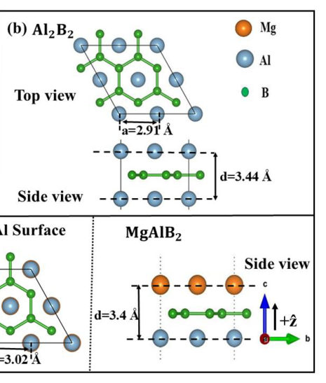
<figcaption class="paper-figure-caption"><b>Fig 1.</b> Fig. 1 Top and side views of (a) Mg2B2, (b) Al2B2, and (c) MgAlB2 with upper (Mg- surface) and lower surface (Al-surface).</figcaption>
</figure>
<figure class="paper-figure-card">

<figcaption class="paper-figure-caption"><b>Fig 2.</b> Fig. 2 (a) Average electrostatic potential of Janus MgAlB2 along the z-axis, (b) top view and (c) side view of ELF map of Janus MgAlB2.</figcaption>
</figure>
<figure class="paper-figure-card">
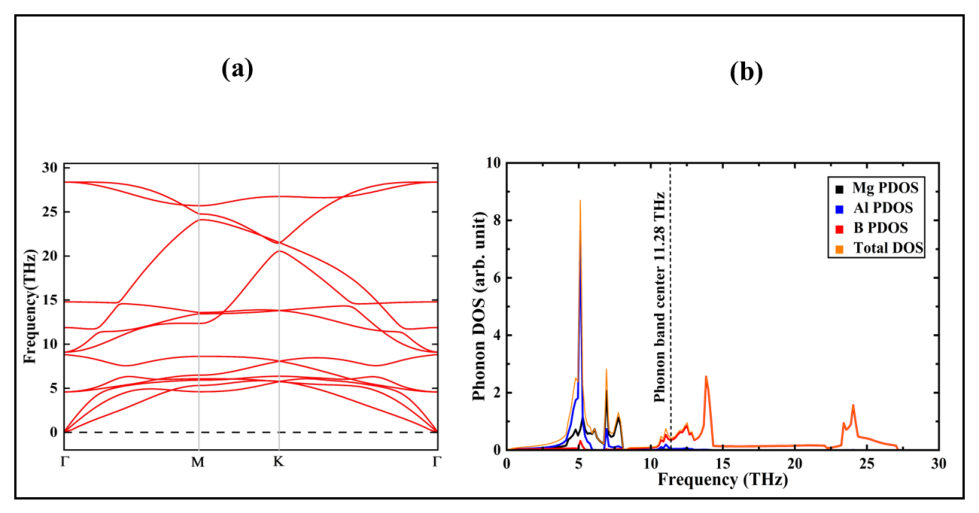
<figcaption class="paper-figure-caption"><b>Fig 3.</b> Fig. 3 (a) Phonon dispersion spectra of the pristine Janus MgAlB2 along the high symmetry directions, and (b) phonon density of states with average phonon band center weighted over total phonon density of states (DOS).</figcaption>
</figure>
<figure class="paper-figure-card">
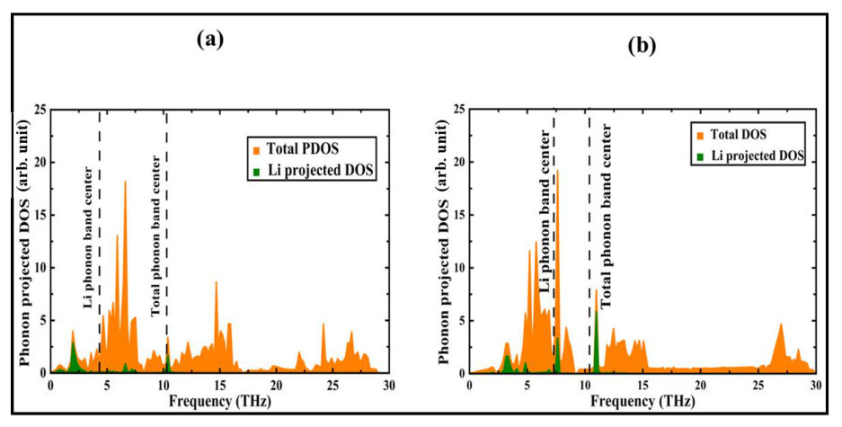
<figcaption class="paper-figure-caption"><b>Fig 4.</b> Fig. 4: Total and lithium-projected phonon DOS of single adsorbed Janus MgAlB2 (a) at S1- site on the Mg surface, and (b) at S4-site on the Al surface, respectively.</figcaption>
</figure>
<figure class="paper-figure-card">

<figcaption class="paper-figure-caption"><b>Fig 5.</b> Fig. 5 Direction dependent variations of (a) Young&#x27;s modulus, Y(𝜃), and (b) Poisson&#x27;s ratio, ν(𝜃), for the Janus MgAlB2 monolayer.</figcaption>
</figure>
</div>

<p><strong>Summary.</strong> This work proposes a novel Janus material, $   ext{MgAlB}_2$, as an advanced anode for Li-ion batteries. By breaking structural symmetry, the material generates an intrinsic polarization that significantly enhances lithium ion transport and storage capacity. The calculations demonstrate this leads to ultra-low diffusion barriers and high theoretical energy density.</p>
<p><strong>Why it may be interesting.</strong> While focused on solid-state electrochemistry, the concept of engineering intrinsic dipole moments via structural asymmetry to control charge transport barriers is analogous to designing quantum interfaces or controlling local electric fields in nanoscale devices relevant to AMO physics.</p>
<details>
<summary>Detailed structure</summary>
<p><strong>Main problem.</strong> The research addresses the need for novel, high-performance anode materials for Li-ion batteries that overcome limitations in conventional anodes like graphite.</p>
<p><strong>Main result.</strong> The engineered Janus $ ext{MgAlB}_2$ monolayer exhibits exceptional performance, achieving a theoretical specific capacity of $1470.24 	ext{ mAhg}^{-1}$ with an ultralow Li diffusion barrier of $17.1 	ext{ meV}$.</p>
<p><strong>Method.</strong> The study relies heavily on first-principles calculations (DFT) to model the electronic structure, electrochemical properties, and ion transport kinetics.</p>
<p><strong>Model / system.</strong> The physical system is a 2D Janus material, $   ext{MgAlB}_2$, created by breaking the symmetry of parent $ ext{MBenes}$ ($ ext{Mg}_2   ext{B}_2$ or $  ext{Al}_2   ext{B}_2$) to induce an intrinsic electric polarization.</p>
<p><strong>Key observables.</strong> Li migration barrier ($17.1 	ext{ meV}$), theoretical specific capacity ($1470.24 	ext{ mAhg}^{-1}$), out-of-plane dipole moment, and electronic delocalization across the monolayer.</p>
<p><strong>Important parameters / regimes.</strong> Low diffusion barrier ($    ext{meV}$ scale); room-temperature diffusion coefficient ($3.43	imes 10^{-10} 	ext{ cm}^2/	ext{s}$).</p>
<p><strong>Assumptions / limitations.</strong> The primary assumption is that engineering intrinsic polarization via Janus asymmetry can fundamentally improve both the thermodynamics (capacity) and kinetics (diffusion) of Li storage.</p>
<p><strong>Figures summary.</strong> Figures illustrate optimized geometries, electrostatic potential maps showing asymmetry, electron localization function (ELF) plots detailing charge transfer upon Li adsorption, and energy profiles mapping the low-barrier diffusion pathway for Li ions.</p>
<p><strong>Paper structure.</strong> The paper proceeds by first establishing the structural modification ($    ext{Mg}_2   ext{B}_2    o   ext{Janus }     ext{MgAlB}_2$), analyzing the resulting polarization, and then using computational methods to quantify enhanced electronic delocalization and superior Li-ion transport properties compared to symmetric counterparts.</p>
</details>
<details>
<summary>Abstract</summary>
<p>In this work, we propose a group II/IIIA-based Janus MBene, MgAlB_2, and investigate its electrochemical properties using first-principles calculations. The substitution of one Mg layer in Mg_2B_2 MBene by an Al layer breaks the structural symmetry and generates a permanent out-of-plane polarization, giving rise to a distinct electronic environment compared with the parent Mg_2B_2 and Al_2B_2 monolayers. Electronic-structure analysis reveals enhanced orbital hybridization among B, Mg, and Al states near the Fermi level, resulting in improved electronic delocalization across the monolayer. The Janus MgAlB_2 monolayer is found to possess excellent dynamical, mechanical, and thermal stability. Owing to its polarization-modified energy landscape, Li ions migrate with an exceptionally low diffusion barrier of 17.1 meV, corresponding to a room-temperature diffusion coefficient of 3.43x10^-10 cm^2/s. Unlike the pristine Mg_2B_2 and Al_2B_2 monolayers, which support only a single stable adsorption layer, MgAlB_2 accommodates two complete Li layers. Detailed analysis shows that the residual polarization retained after first-layer lithiation continues to promote Li adsorption, whereas increasing Li-Li electrostatic interactions eventually limit further storage. As a result, the Janus monolayer delivers a high theoretical specific capacity of 1470.24 mAh/g together with a small volume expansion of only 3.7% during maximum lithiation. The present study demonstrates that intrinsic polarization can be utilized to regulate both the thermodynamics and kinetics of Li storage, providing a design strategy for high-rate and high-capacity two-dimensional electrode materials.</p>
</details>
<p><sub><a href="#top">↑ back to top</a></sub></p>

<p><a id="paper-2607.04459"></a></p>
<h3 id="where-does-surface-math1517math-come-from-a-systematic-derivation-of-nonlinear-surface-susceptibilities-from-bulk-nonlocal-response"><a href="http://arxiv.org/abs/2607.04459v1">Where Does Surface $χ^{(2)}$ Come From? A Systematic Derivation of Nonlinear Surface Susceptibilities from Bulk Nonlocal Response</a></h3>
<p><strong>Authors:</strong> Zolla Frederic<br>
<strong>Type:</strong> theory · <strong>Category:</strong> other · <strong>PDF:</strong> <a href="https://arxiv.org/pdf/2607.04459v1">https://arxiv.org/pdf/2607.04459v1</a><br>
<strong>Analysis basis:</strong> full PDF text, analyzed in chunks
<strong>Topic relevance:</strong> <code>Keldysh / 2PI / non-Gaussian methods</code> <strong>1/5</strong> · <code>correlated / nonlocal dissipation</code> <strong>1/5</strong> · <code>interference shaping light</code> <strong>1/5</strong> · <code>methods for driven-dissipative</code> <strong>1/5</strong></p>
<div class="figure-strip-hint">↔ Scroll figures horizontally</div>
<div class="paper-figures-scroll">
<figure class="paper-figure-card">

<figcaption class="paper-figure-caption"><b>Fig 1.</b> Figure 1: Schematic decomposition of the second-order polarization at a point r near the boundary ∂Ω. The integration domain over the two source variables (r′, r′′) splits into four cells: the homogeneous bulk contribution (top-left), a higher-order surface correction where both source points lie outside Ω(top-right), and two cross terms (bottom) where exactly one of the source points lies outside. After the distributional thin-layer limit, the two cross terms combine to produce the leading surface susceptibility χ(2),∂Ωsupported on ∂Ω.</figcaption>
</figure>
<figure class="paper-figure-card">

<figcaption class="paper-figure-caption"><b>Fig 2.</b> Figure 2: An idealised medium whose χ(2) reduces to a singular distribution localised at x = 0. The fundamental field u1 at frequency ω propagates from the left, and the second-harmonic field u2 at 2ω radiates outward from the interface on both sides.</figcaption>
</figure>
<figure class="paper-figure-card">

<figcaption class="paper-figure-caption"><b>Fig 3.</b> Figure 3: Photon-level picture: two photons at frequency ω combine at the surface χ(2)</figcaption>
</figure>
</div>

<p><strong>Summary.</strong> This paper develops a systematic theory to derive nonlinear surface susceptibilities ($\chi^{(2)}$) from general nonlocal constitutive relations, particularly for second-harmonic generation (SHG). It rigorously proves that even when bulk symmetry forbids the macroscopic SHG response, the interface itself generates a measurable signal. The core technique involves reducing complex higher-order problems to simpler effective linear ones via marginal integration.</p>
<p><strong>Why it may be interesting.</strong> This work provides a rigorous theoretical foundation for understanding nonlinear optics at interfaces, which is crucial for designing advanced optical devices where surface effects dominate the response despite bulk symmetry constraints. The mathematical machinery involving nonlocal kernels and distributional limits is highly technical but foundational to continuum electrodynamics.</p>
<details>
<summary>Detailed structure</summary>
<p><strong>Main problem.</strong> The paper systematically derives nonlinear surface susceptibilities ($\chi^{(2)}$) from the general theory of bulk nonlocal response, specifically for second-harmonic generation (SHG). It aims to understand how interfacial effects manifest when the bulk material symmetry forbids a direct macroscopic response.</p>
<p><strong>Main result.</strong> The complex nonlinear surface problem reduces recursively to an effective linear one via a 'marginal integration principle.' Crucially, while centrosymmetry forces the bulk $\chi^{(2)}$ to zero, it does not forbid the surface-induced SHG signal.</p>
<p><strong>Method.</strong> The methodology combines extending distributional frameworks from linear to nonlinear response theory, employing spatial moment expansions and a distributional thin-layer limit ($\ell 	o 0$). A key mathematical tool is the 'marginal integration principle' used to simplify the higher-order boundary problem.</p>
<p><strong>Model / system.</strong> The analysis models the nonlinear optical response of materials at interfaces, using general tensorial nonlocal constitutive relations. Examples include planar and spherical geometries analyzed with specific kernels like Gaussian or Yukawa potentials.</p>
<p><strong>Key observables.</strong> Nonlinear surface susceptibilities ($\chi^{(2),s}_{\parallel}$ and $\chi^{(2),s}_{\perp}$), the bulk second-harmonic polarization ($P^{(2),\Omega}$), and generalized nonlinear Maxwell boundary conditions for the SH field.</p>
<p><strong>Important parameters / regimes.</strong> The decay length scale ($\ell$), the thickness of the layer ($d$), and geometric parameters like mean curvature ($H$) and Gaussian curvature ($K$).</p>
<p><strong>Assumptions / limitations.</strong> The derivation relies on assuming rapid decay of the nonlocal kernel, homogeneity conditions, and utilizing the distributional thin-layer limit to isolate surface contributions.</p>
<p><strong>Figures summary.</strong> Figures schematically illustrate the decomposition of polarization into different spatial cells ($\Omega	imes \Omega$, $\Omega_c$) and show how boundary conditions are derived for the second-harmonic field.</p>
<p><strong>Paper structure.</strong> The paper progresses by first establishing the general framework (1D scalar case), then generalizing to the 3D tensorial case. It systematically applies symmetry arguments (centro-symmetry) to prove that bulk responses vanish while surface responses persist, culminating in generalized boundary conditions for curved interfaces.</p>
</details>
<details>
<summary>Abstract</summary>
<p>We extend the distributional framework developed in the companion paper [Zolla, arXiv:2605.15716] to the nonlinear case, focusing on the second-order ($χ^{(2)}$) response responsible for second-harmonic generation (SHG). Starting from the most general tensorial nonlocal second-order constitutive relation and combining a spatial moment expansion with a distributional thin-layer limit, we show that the full complexity of the nonlinear interfacial response condenses, at leading order, into two scalars, the nonlinear surface susceptibilities $χ^{(2),s}_\parallel$ and $χ^{(2),s}_\perp$, associated with the tangential and normal components of the electric field, respectively. A key structural result is established: via a marginal integration over one field argument, the nonlinear surface problem reduces recursively to an effective linear one, whose surface susceptibility is determined by the bulk nonlinear kernel alone. Generalized nonlinear Maxwell boundary conditions are derived explicitly for planar and spherical interfaces, and curvature corrections are obtained systematically. The formalism is illustrated on Gaussian, Yukawa, and tensorial Lorentz kernels.</p>
</details>
<p><sub><a href="#top">↑ back to top</a></sub></p>

<p><a id="paper-2607.05172"></a></p>
<h3 id="platinum-is-a-photocatalyst-large-visible-light-quantum-efficiency-revealed"><a href="http://arxiv.org/abs/2607.05172v1">Platinum is a Photocatalyst: Large Visible-Light Quantum Efficiency Revealed</a></h3>
<p><strong>Authors:</strong> Olivier Henrotte, Yin Chak Wong, Jordan Edwards, Simão Meneses João, Štěpán Kment, Emiliano Cortés, Johannes Lischner, Alberto Naldoni<br>
<strong>Type:</strong> both · <strong>Category:</strong> other · <strong>PDF:</strong> <a href="https://arxiv.org/pdf/2607.05172v1">https://arxiv.org/pdf/2607.05172v1</a><br>
<strong>Analysis basis:</strong> full PDF text, analyzed in chunks
<strong>Topic relevance:</strong> <code>Keldysh / 2PI / non-Gaussian methods</code> <strong>1/5</strong> · <code>driven-dissipative phase transition</code> <strong>1/5</strong> · <code>methods for driven-dissipative</code> <strong>1/5</strong></p>
<div class="figure-strip-hint">↔ Scroll figures horizontally</div>
<div class="paper-figures-scroll">
<figure class="paper-figure-card">
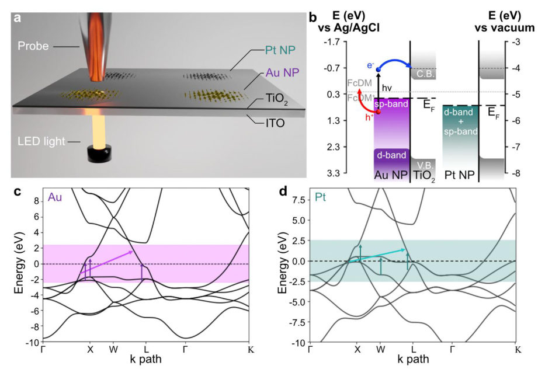
<figcaption class="paper-figure-caption"><b>Fig 1.</b> Figure 1. Scanning photoelectrochemical microscopy platform and energetic framework for Au- TiO2 and Pt-TiO2 photoactivity. (a) Schematic of the SPECM configuration. (b) Energy-level band showing the relevant electronic levels of Au and Pt (Fermi level EF; schematic sp- and d-bands), the TiO2 band edges (conduction band, C.B.; valence band, V.B.), and the FcDM/FcDM+ redox couple. (c,d) Electronic band structure of Au (c), and Pt (d) from tight-binding highlighting representative optical excitation pathways under visible illumination.</figcaption>
</figure>
<figure class="paper-figure-card">

<figcaption class="paper-figure-caption"><b>Fig 2.</b> Figure 2. Position-resolved external quantum efficiency (EQE), morphology, and optical properties of Au and Pt nanoislands. (a) SPECM photoactivity map acquired over the Pt nanoisland array and the Au nanoisland array under visible illumination, used to identify the scan trajectories and regions of interest; the stars indicate the centre of the arrays. The markers (i) to (v) correspond to positions of interest. (b) EQE as a function of position along the scan line indicated in (a); 0 µm corresponds to the stars in (a). Au data are shown from purple to pink and Pt data from teal to cyan, with each trace corresponding to a different excitation wavelength. (c) SEM images of the Au array after...</figcaption>
</figure>
<figure class="paper-figure-card">
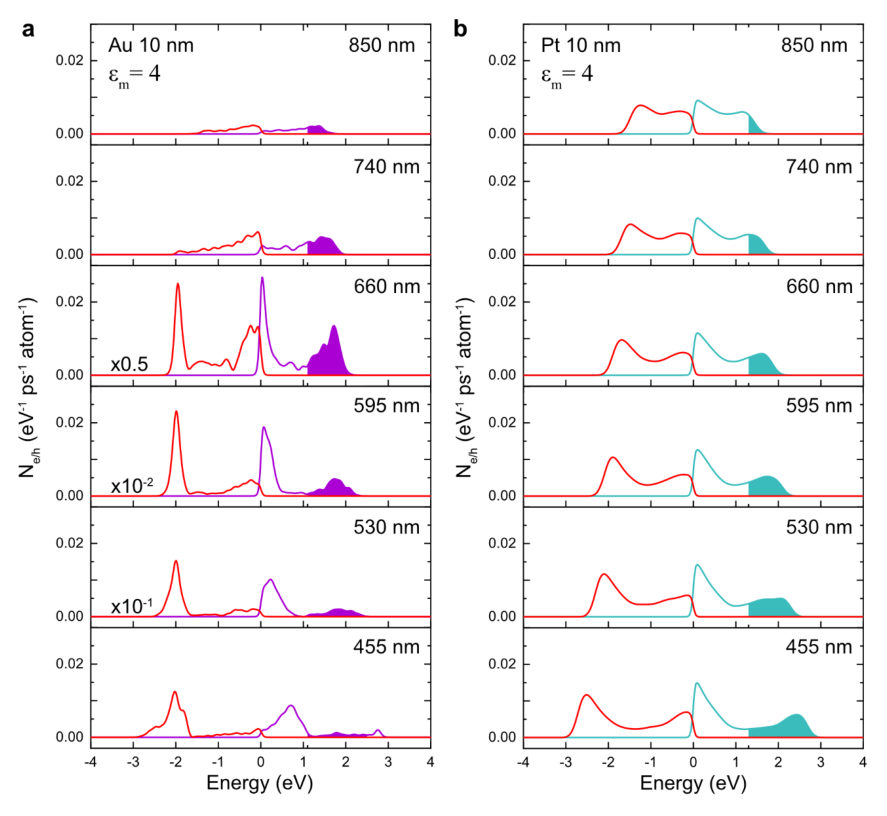
<figcaption class="paper-figure-caption"><b>Fig 3.</b> Figure 3. Theoretical simulation of hot carrier generation in Au and Pt nanoislands on a TiO2 thin film. (a) Energetic distribution of hot electrons (purple line) and hot holes (red line) in a spherical Au nanoparticle of 10 nm diameter for different excitation wavelengths in a high-permittivity environment (εm=4). (b) Energetic distribution of hot electrons (cyan line) and hot holes (red line) in a spherical Pt nanoparticle of 10 nm diameter for different excitation wavelengths in a high- permittivity environment (εm=4). The number of above-Schottky barrier electrons (corresponding to the number of extractable holes) are represented by the filled region in purple for Au and cyan for Pt....</figcaption>
</figure>
<figure class="paper-figure-card">

<figcaption class="paper-figure-caption"><b>Fig 4.</b> Figure 4. Comparison of external quantum efficiency and theoretical hot carrier generation with above Schottky barrier energy of Au and Pt nanoislands on TiO2 thin film. (a) External quantum efficiency (EQE) per atom as a function of excitation wavelength for different populations of Au (11 nm, pink; 34 nm, purple) and Pt (9 nm, cyan; 33 nm, teal) nanoislands. (b) Calculated number of generated hot electrons above Schottky barrier per atom for a 10 nm nanoparticle of Au (purple to pink) and Pt (teal to cyan) for different εm.</figcaption>
</figure>
</div>

<p><strong>Summary.</strong> This research demonstrates that Platinum nanoislands on $  ext{TiO}_2$ are highly efficient photocatalysts under visible light, challenging the view of Pt as merely a passive material. By using advanced photoelectrochemical microscopy and theoretical modeling, the authors show that discrete Pt islands generate photochemically active carriers with efficiencies comparable to or better than Au. The findings reposition noble metals as crucial, light-responsive components in optoelectronic devices.</p>
<p><strong>Why it may be interesting.</strong> The work bridges concepts from plasmonics and semiconductor physics by quantifying how intrinsic material properties (like the density of states in $    ext{Pt}$) can lead to measurable photoactivity far exceeding simple co-catalyst models. This is relevant for understanding charge separation dynamics at metal/semiconductor interfaces.</p>
<details>
<summary>Detailed structure</summary>
<p><strong>Main problem.</strong> To challenge the view that catalytic metals like Platinum (Pt) are merely passive co-catalysts with poor visible-light quantum efficiency in photocatalysis, especially when compared to Gold (Au).</p>
<p><strong>Main result.</strong> Discrete Pt nanoislands exhibit robust broadband visible-light photoactivity, showing an EQE-per-atom significantly higher than Au at specific wavelengths. This reclassifies Pt as a light-responsive component rather than just a passive catalyst.</p>
<p><strong>Method.</strong> The study combines quantitative scanning photoelectrochemical microscopy (SPECM) measurements with theoretical hot-carrier generation rate calculations.</p>
<p><strong>Model / system.</strong> The system involves metal nanoislands ($    ext{Pt}$ and $  ext{Au}$) deposited on a semiconductor ($ ext{TiO}_2$), forming Schottky junctions. The analysis compares the photoactivity derived from plasmonic excitation in both metals.</p>
<p><strong>Key observables.</strong> Wavelength-resolved external quantum efficiency (EQE), EQE per atom, internal quantum efficiency, and local extinction spectra.</p>
<p><strong>Important parameters / regimes.</strong> Visible light spectral region ($\sim 455 	ext{ nm}$ to $595 	ext{ nm}$); Schottky barrier heights ($\Phi_B$ for $  ext{Au-TiO}_2$ vs. $    ext{Pt-TiO}_2$).</p>
<p><strong>Assumptions / limitations.</strong> The hot-carrier model does not explicitly include interfacial electronic states, thermalization losses, or defect-mediated recombination pathways.</p>
<p><strong>Figures summary.</strong> Figures illustrate the SPECM setup, energy band diagrams for both metal/semiconductor junctions, and position-resolved maps comparing Au vs. Pt EQE, correlating activity with morphology and optical properties.</p>
<p><strong>Paper structure.</strong> The paper establishes the problem by contrasting $ ext{Pt}$'s traditional role with its observed photoactivity. It details the experimental methodology using SPECM to measure wavelength-dependent charge generation ($ ext{EQE}$). Theoretical calculations then link this observation to hot-carrier dynamics, concluding that Pt functions as an active light harvester.</p>
</details>
<details>
<summary>Abstract</summary>
<p>Metal-semiconductor junctions in optoelectronic devices are commonly engineered to promote charge separation. In Pt/TiO2 Schottky junctions, Pt is typically regarded as a catalytic electron sink rather than a visible-light-active component. Here, we demonstrate that Pt nanoislands on TiO2 can generate photochemically active carriers under visible light excitation. Using quantitative scanning photoelectrochemical microscopy, we measure the wavelength-resolved external quantum efficiency (EQE) of Au and Pt nanoisland arrays on TiO2, and correlate their reactivity with their morphology and extinction spectra. Discrete 10 nm Pt nanoislands exhibit robust broadband visible light photoactivity - exceeding the photoactivity of similar-sized Au nanoislands under blue-green excitation - whereas Pt's photoactivity is strongly suppressed when the nanoislands are connected. Surprisingly, Pt exhibits an EQE-per-atom approx. 20 times higher than Au at 455 nm and approx. 2 times higher at 595 nm (at Au's optimum). We show an approximately wavelength-independent Pt internal quantum efficiency of approx. 1 percent across the visible spectral region. These findings reposition catalytic metals with strongly damped optical response in the visible as light-responsive components in metal-semiconductor hybrids, challenging the prevailing perception that they function solely as passive co-catalysts in photocatalytic systems.</p>
</details>
<p><sub><a href="#top">↑ back to top</a></sub></p>

<p><a id="paper-2607.05142"></a></p>
<h3 id="torsional-selection-rule-for-the-spin-orbit-conversion-of-light"><a href="http://arxiv.org/abs/2607.05142v1">Torsional selection rule for the spin--orbit conversion of light</a></h3>
<p><strong>Authors:</strong> Edilberto O. Silva<br>
<strong>Type:</strong> both · <strong>Category:</strong> other · <strong>PDF:</strong> <a href="https://arxiv.org/pdf/2607.05142v1">https://arxiv.org/pdf/2607.05142v1</a><br>
<strong>Analysis basis:</strong> full PDF text, analyzed in chunks
<strong>Topic relevance:</strong> <code>interference shaping light</code> <strong>1/5</strong> · <code>quantum optics experiment</code> <strong>1/5</strong> · <code>spintronics-quantum-optics interface</code> <strong>1/5</strong></p>
<div class="figure-strip-hint">↔ Scroll figures horizontally</div>
<div class="paper-figures-scroll">
<figure class="paper-figure-card">

<figcaption class="paper-figure-caption"><b>Fig 1.</b> FIG. 1. The selection rule distinguishes the rank of the me- diating field. (a) A Pancharatnam–Berry element couples the circular components through a rank-two director texture of charge q; the coupling winds as e±i2qφ. (b) A torsional (Riemann–Cartan) medium couples them through the rank- one contortion vector, which winds as e±iqφ. (c),(d) Simu- lated OAM spectra of the converted beam E−for the same texture charge q = 1 and identical coupling magnitude: the sideband appears at ℓ= +2 (PB) versus ℓ= +1 (torsional).</figcaption>
</figure>
<figure class="paper-figure-card">
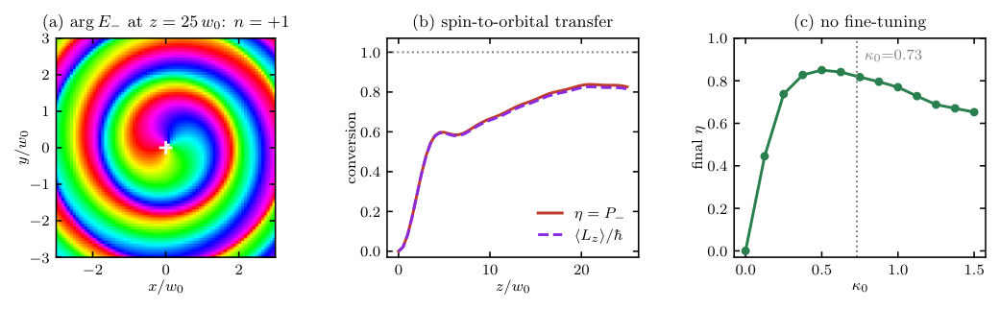
<figcaption class="paper-figure-caption"><b>Fig 2.</b> FIG. 2. Torsional vortex generation (q = 1). (a) Phase of the converted field at z = 25 w0: a stable, charge-n=+1 spiral. (b) Conversion η = P−and mean OAM versus propagation distance; both saturate at 0.83. (c) Final conversion versus holonomy strength κ0: a broad maximum (η ≃0.85) with no fine-tuning; in every run the charge is quantized at n = +1. Full sweeps in (κ0, Γ0), paraxial parameter k0 = 8–64, and grid refinement are given in the SM [27].</figcaption>
</figure>
<figure class="paper-figure-card">
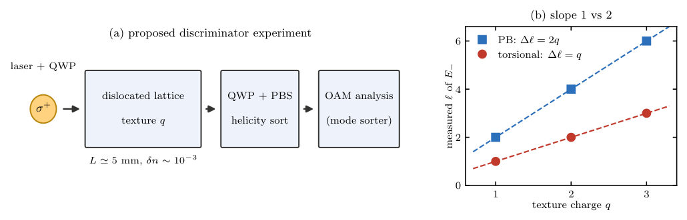
<figcaption class="paper-figure-caption"><b>Fig 3.</b> FIG. 3. Proposed discriminator. (a) A circularly polarized Gaussian traverses a femtosecond-written lattice with a screw- dislocation texture of charge q (L ≃5 mm at δn ∼10−3); the output is helicity-sorted and its OAM measured. (b) Predicted OAM of the converted beam versus texture charge, from full simulations of Eq. (2) (circles) and of a PB-type rank-two coupling of identical magnitude (squares): slopes 1 and 2, with no overlap at any integer q.</figcaption>
</figure>
</div>

<p><strong>Summary.</strong> This paper introduces a novel mechanism where light's spin converts to orbital angular momentum via the geometric torsion of a medium, yielding a selection rule $\Delta\ell=q$. This contrasts sharply with the established Pancharatnam–Berry rule ($\Delta\ell=2q$). The authors provide theoretical derivations and simulation results, culminating in a proposal for an experiment that can directly measure this topological difference.</p>
<p><strong>Why it may be interesting.</strong> This work bridges geometric optics with condensed matter topology by showing how material defects (torsion) can provide an alternative, quantifiable mechanism for light-matter interaction that is fundamentally different from standard Berry phase effects.</p>
<details>
<summary>Detailed structure</summary>
<p><strong>Main problem.</strong> The paper aims to distinguish between two mechanisms for converting light's spin angular momentum (SAM) into orbital angular momentum (OAM): the standard Pancharatnam–Berry mechanism and a novel process mediated by geometric torsion.</p>
<p><strong>Main result.</strong> Torsion-mediated conversion follows a selection rule $\Delta\ell=q$, which is distinct from the PB rule ($\Delta\ell=2q$), allowing for experimental discrimination using polarization-resolved measurements.</p>
<p><strong>Method.</strong> The authors use theoretical modeling (effective paraxial Maxwell equations) combined with numerical simulations and propose an experimental discriminator setup.</p>
<p><strong>Model / system.</strong> The system involves light propagating through a material exhibiting geometric torsion, modeled as a continuum of screw dislocations. The coupling is described by an effective Hamiltonian involving the contortion tensor, leading to a rank-one field interaction.</p>
<p><strong>Key observables.</strong> The primary observables are the resulting OAM ($\ell$) versus the written texture charge ($q$), which should yield slopes of 1 (torsional) or 2 (PB).</p>
<p><strong>Important parameters / regimes.</strong> Key parameters include the topological charges $q$ and the coupling strengths $\Gamma(r)$ and $\kappa(r)$. The conversion efficiency is shown to saturate at high values.</p>
<p><strong>Assumptions / limitations.</strong> The analysis assumes that the physical signatures, such as torque conservation ($    ilde{J}_z$) and the functional dependence of OAM on $q$, are distinct enough to separate the two coupling mechanisms.</p>
<p><strong>Figures summary.</strong> Figure 1 compares winding patterns for rank-2 (PB) vs. rank-1 (torsional). Figure 2 shows simulated vortex generation ($\ell=+1$ spiral) with high efficiency. Figure 3 proposes an experiment showing non-overlapping OAM spectra for $\Delta\ell=q$ versus $\Delta\ell=2q$.</p>
<p><strong>Paper structure.</strong> The paper first establishes the theoretical difference between PB coupling (rank-two director, $\Delta\ell=2q$) and torsional coupling (rank-one contortion, $\Delta\ell=q$). It then presents simulations confirming the selection rule and proposes a concrete experimental setup using lattice writing to measure this distinction.</p>
</details>
<details>
<summary>Abstract</summary>
<p>Standard Pancharatnam-Berry and linear-birefringent media convert optical spin into orbital angular momentum (OAM) through an anisotropy \emph{director}, a rank-two, headless field, and therefore obey the selection rule $Δ\ell=2q$ per unit texture charge $q$. We show that a medium with geometric \emph{torsion}, the continuum limit of a screw-dislocation array, can convert spin to OAM through the \emph{contortion} of its material connection, which enters the effective paraxial dynamics as a rank-one vector field. The resulting selection rule is $Δ\ell=q$. Its winding is fixed by geometry and symmetry, not by a Pancharatnam--Berry director, and the process conserves the screw charge $\tilde J_z=L_z+(q/2)σ_z$ while exchanging $(2-q)\hbar$ of angular momentum per converted photon with the defect lattice. Paraxial simulations confirm the rule: a circular Gaussian input develops a stable, topologically quantized $\ell=+q$ vortex in the reversed helicity, with $83\%$ conversion over three Rayleigh ranges and no fine-tuning. We propose a polarization-resolved photonic-lattice discriminator in which the slope of the measured OAM versus the independently written texture charge, one for torsion, two for birefringence, separates the two mechanisms.</p>
</details>
<p><sub><a href="#top">↑ back to top</a></sub></p>

<p><a id="paper-2607.04104"></a></p>
<h3 id="vortex-number-controlled-josephson-diode-polarity-in-corbino-junctions"><a href="http://arxiv.org/abs/2607.04104v1">Vortex-Number-Controlled Josephson Diode Polarity in Corbino Junctions</a></h3>
<p><strong>Authors:</strong> Linghao Huang, Jing Wang<br>
<strong>Type:</strong> theory · <strong>Category:</strong> other · <strong>PDF:</strong> <a href="https://arxiv.org/pdf/2607.04104v1">https://arxiv.org/pdf/2607.04104v1</a><br>
<strong>Analysis basis:</strong> full PDF text, analyzed in chunks
<strong>Topic relevance:</strong> <code>Keldysh / 2PI / non-Gaussian methods</code> <strong>1/5</strong> · <code>driven-dissipative phase transition</code> <strong>1/5</strong> · <code>methods for driven-dissipative</code> <strong>1/5</strong></p>
<div class="figure-strip-hint">↔ Scroll figures horizontally</div>
<div class="paper-figures-scroll">
<figure class="paper-figure-card">

<figcaption class="paper-figure-caption"><b>Fig 1.</b> FIG. 1. Corbino Josephson junction and current-phase re- lation (CPR). (a) Schematic of a Corbino Josephson junc- tion. A perpendicular magnetic field threads the non- superconducting region (N), enclosing a magnetic flux Φ quantized in units of the superconducting flux quantum Φ0 = h/2e. (b) Andreev spectrum and CPR of a homogeneous junction with Φ = Φ0. (c) Corresponding results for an inho- mogeneous junction. The diffuse red spot denotes a Joseph- son vortex, which moves around the annulus as the phase difference ϕ between the inner and outer superconductors is increased.</figcaption>
</figure>
<figure class="paper-figure-card">
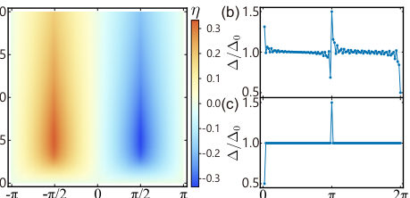
<figcaption class="paper-figure-caption"><b>Fig 2.</b> FIG. 2. The Josephson diode polarity and representative in- homogeneous pairing profile ∆(θ). (a) Diode polarity ob- tained from Eq. (9). (b),(c) Two representative examples of ∆(θ) evaluated on a uniform discretization of θ ∈[0, 2π) with 100 grid points. (b) corresponds to the profile defined in Eq. (3) with nc = 60. (c) shows a two-site perturbation profile, in which the pairing amplitude exhibits opposite-sign deviations from the uniform background at two nearly dia- metrically separated grid points (sites 1 and 50).</figcaption>
</figure>
<figure class="paper-figure-card">

<figcaption class="paper-figure-caption"><b>Fig 3.</b> Fig. 2(b) shows this profile sampled on a uniform angu- lar grid, corresponding to the discrete values ∆ni used in the numerics. Its dominant feature is two opposite-sign modulations localized in two nearly diametrically oppo- site angular sectors. Motivated by this structure, we further consider a simplified two-site perturbation pro- file with opposite-sign pairing-amplitude perturbations at two nearly diametrically separated grid sites on the ring [Fig. 2(c)]. This reduced profile introduces only small deviations in φj, which weakly renormalize the harmonic phases but do not affect the vortex-number- controlled alternation of the diode polarity.</figcaption>
</figure>
<figure class="paper-figure-card">

<figcaption class="paper-figure-caption"><b>Fig 4.</b> FIG. 3. Numerical results for effective 1D edge model. (a) Forward and backward critical currents I± c as a function of vortex number p. (b) Corresponding diode polarity η versus p. (c),(d) Current-phase relations for odd and even p, respec- tively. (e),(f) Representative low-energy and quasi-continuum Andreev spectra for p = 1 and p = 2, respectively. The color scale indicates the wavefunction weight on the junc- tion Majorana modes. The inset in (f) shows the sum of the two quasi-continuum branches. Model parameters are v = 1, ∆0 = 0.15, m = 0.6, Ecut = 0.5.</figcaption>
</figure>
<figure class="paper-figure-card">
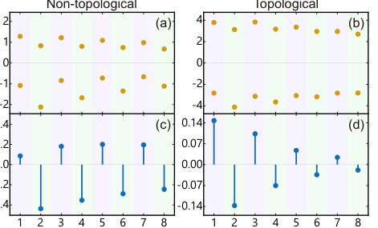
<figcaption class="paper-figure-caption"><b>Fig 5.</b> FIG. 4. Numerical results for 2D models. Panels (a),(c) show the forward and backward critical currents I± c and diode po- larity η, respectively, for a non-topological Corbino Josephson junction. The model parameters are W = 400, L = 2, t = 20, µ = 10, ∆= 1, nc = 300. Panels (b),(d) show the corresponding results for a topological junction. The model parameters are W = 300, L = 2, t = 300, M0 = 20, M1 = 300, mz = 20, µ = 5, ∆= 10, nc = 200.</figcaption>
</figure>
</div>

<p><strong>Summary.</strong> The paper shows that the diode polarity in Josephson junctions can be controlled by the vortex number ($p$) even without invoking Majorana physics. This control arises from a harmonic-selection rule dictated by structured spatial inhomogeneities in the junction's pairing potential. The findings establish a general principle for engineering non-reciprocal superconducting transport.</p>
<p><strong>Why it may be interesting.</strong> This work provides a concrete, non-topological mechanism for observing phenomena often associated with topological superconductivity (like parity dependence), which is highly relevant for understanding engineered superconducting devices and exotic quantum states.</p>
<details>
<summary>Detailed structure</summary>
<p><strong>Main problem.</strong> To determine if vortex-parity-dependent Josephson diode polarity reversal is a unique signature of Majorana physics, or if it can emerge from generic, non-topological mechanisms.</p>
<p><strong>Main result.</strong> The authors demonstrate that structured spatial inhomogeneity in Corbino junctions provides a universal mechanism for achieving vortex-parity-dependent alternation of the diode's critical current asymmetry.</p>
<p><strong>Method.</strong> The analysis uses continuum Andreev spectral theory and perturbation methods to derive a harmonic-selection rule governing how structural modulations affect higher-order Josephson current harmonics.</p>
<p><strong>Model / system.</strong> The system is modeled using Corbino Josephson junctions, described by the continuum Andreev spectral problem Hamiltonian incorporating spatial inhomogeneity $\Delta(	heta)$. The analysis extends from low-dimensional edge models to full two-dimensional lattice simulations.</p>
<p><strong>Key observables.</strong> Josephson diode effect (JDE) polarity ($   ext{sgn}(\eta)$), critical currents ($I_{\pm c}$), and the dependence of these on the vortex number $p$.</p>
<p><strong>Important parameters / regimes.</strong> Vortex number $p$ (integer winding number), structured inhomogeneity $\delta\Delta(	heta)$, and the relative phases/amplitudes of higher-order current harmonics.</p>
<p><strong>Assumptions / limitations.</strong> The analysis assumes a weak spatial modulation ($\delta\Delta \ll \Delta_0$) in the pairing profile, though robustness is shown against finite transparency.</p>
<p><strong>Figures summary.</strong> Figures illustrate the Corbino junction geometry and CPR; one figure shows diode polarity dependence on $\phi$ for different profiles, while another compares results across topological and non-topological 2D models showing parity alternation.</p>
<p><strong>Paper structure.</strong> The paper develops from establishing the general relationship between diode asymmetry ($\eta$) and current harmonics to deriving a specific harmonic-selection rule based on solving the Andreev spectrum in the presence of structured inhomogeneity, culminating in numerical confirmation across multiple model dimensions.</p>
</details>
<details>
<summary>Abstract</summary>
<p>We demonstrate that the polarity of the Josephson diode effect in Corbino Josephson junctions can be deterministically controlled by the vortex number, which arises as a generic consequence of structured spatial inhomogeneity. By solving the continuum Andreev spectral problem, we identify a mechanism in which the vortex number selectively filters specific spatial Fourier harmonics of the local inhomogeneity. This harmonic selection reshapes the amplitudes and relative phases of higher-order Josephson current harmonics, ultimately reversing the critical-current asymmetry. Numerical simulations of both an effective one-dimensional edge model and full two-dimensional lattice models confirm the robustness of this mechanism. Crucially, our results show that a vortex-parity-dependent reversal of diode polarity is not an exclusive signature of Majorana physics, but can emerge generically from geometric and structural inhomogeneities in Corbino junctions.</p>
</details>
<p><sub><a href="#top">↑ back to top</a></sub></p>

<p><a id="paper-2607.04757"></a></p>
<h3 id="on-the-math1570math-channel-noise-in-inp-hemts-from-4-k-to-300-k"><a href="http://arxiv.org/abs/2607.04757v1">On the $\mathrm{In_{x}Ga_{1-x}As}$ channel noise in InP HEMTs from 4 K to 300 K</a></h3>
<p><strong>Authors:</strong> Junjie Li, Justin H. Chen, Austin J. Minnich, Jan Grahn<br>
<strong>Type:</strong> experiment · <strong>Category:</strong> other · <strong>PDF:</strong> <a href="https://arxiv.org/pdf/2607.04757v1">https://arxiv.org/pdf/2607.04757v1</a><br>
<strong>Analysis basis:</strong> full PDF text, analyzed in chunks
<strong>Topic relevance:</strong> <code>correlated / nonlocal dissipation</code> <strong>1/5</strong> · <code>non-equilibrium dynamics</code> <strong>1/5</strong></p>
<div class="figure-strip-hint">↔ Scroll figures horizontally</div>
<div class="paper-figures-scroll">
<figure class="paper-figure-card">

<figcaption class="paper-figure-caption"><b>Fig 1.</b> Fig. 1. Schematic of the cryogenic noise measurement setup using an LNA module equipped with the InP HEMTs. The LNA is cooled to a temperature between 4 and 40 K inside a cryostat.</figcaption>
</figure>
<figure class="paper-figure-card">

<figcaption class="paper-figure-caption"><b>Fig 2.</b> Fig. 2. Schematic of the on-wafer noise measurement setup in a cryogenic probe station. The InP HEMT is probed on-wafer at temperatures from 40 to 300 K. The room-temperature measurement chain consists of (1) HMC-T2100 local oscillator, (2) M1-0220-P mixer, (3)–(4) low-noise amplification and attenuation, (5)–(8) bandpass filters, (9) variable attenuator, and (10) U8481A power sensor.</figcaption>
</figure>
<figure class="paper-figure-card">

<figcaption class="paper-figure-caption"><b>Fig 3.</b> Fig. 3. Equivalent drain noise temperature Td versus ambient temperature for InP HEMTs with channel indium content of 53%, 60%, and 70%, biased at Vds = 0.5 V and Id = 5 mA. Circles and crosses represent Td values extracted from on-wafer and LNA noise measurements, respectively. Dashed lines are parabolic fits to the on-wafer data above 40 K, extrapolated to 4 K. The absence of on-wafer data below 80 K for the 70% indium channel InP HEMT was due to oscillations occurring during probing.</figcaption>
</figure>
<figure class="paper-figure-card">
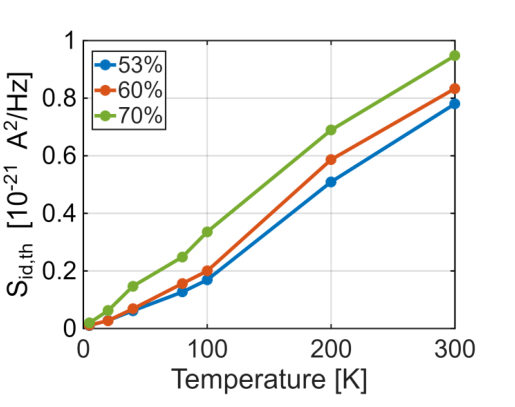
<figcaption class="paper-figure-caption"><b>Fig 4.</b> Fig. 5. Thermal noise current PSD Sid,th = 4kBTagds0 versus ambient temperature for InP HEMTs with channel indium content of 53%, 60%, and 70%.</figcaption>
</figure>
<figure class="paper-figure-card">

<figcaption class="paper-figure-caption"><b>Fig 5.</b> Fig. 4. Channel current noise spectral density Sid at 4 K as a function of indium content x in InxGa1−xAs channel InP HEMTs. Green points show values extracted from LNA noise measurements. Blue points show values extrapolated to 4 K from the Td model fitted to on-wafer measurements (Fig. 3); Error bars represent the combined measurement uncertainties and fitting errors.</figcaption>
</figure>
</div>

<p><strong>Summary.</strong> This work investigates the temperature dependence of channel noise in InP HEMTs with $\mathrm{In_{x}Ga_{1-x}As}$ channels. By measuring noise from 4 K to 300 K, the authors decompose the total noise into thermal and excess components. They conclude that the excess noise is dominated by impact ionization and real-space transfer effects, not just shot noise, guiding material optimization for low-noise applications.</p>
<p><strong>Why it may be interesting.</strong> While focused on semiconductor device physics rather than fundamental quantum dynamics, understanding noise sources in high-frequency transistors is crucial for developing low-noise components required in quantum measurement and sensing applications.</p>
<details>
<summary>Detailed structure</summary>
<p><strong>Main problem.</strong> The study aims to fully characterize the physical mechanisms responsible for noise generation in $\mathrm{In_{x}Ga_{1-x}As}$ channels within InP HEMTs across a wide temperature range (4 K to 300 K).</p>
<p><strong>Main result.</strong> The excess channel noise at cryogenic temperatures is found to originate not only from shot noise but also significantly from impact ionization and real-space transfer (RST) noise, with the 60% indium composition yielding the lowest overall noise.</p>
<p><strong>Method.</strong> Noise was quantified by extracting the equivalent drain noise temperature ($T_d$) using both on-wafer characterization at higher temperatures and LNA-based measurements at lower temperatures.</p>
<p><strong>Model / system.</strong> The physical system is a 100-nm gate-length InP HEMT utilizing an $\mathrm{In_{x}Ga_{1-x}As}$ channel. The noise analysis decomposes the total current noise into temperature-dependent thermal and excess components.</p>
<p><strong>Key observables.</strong> Equivalent drain noise temperature ($T_d$), channel current noise power spectral density ($\mathrm{S_{id}}$), and the ratio of thermal to excess noise contributions.</p>
<p><strong>Important parameters / regimes.</strong> Temperature range (4 K to 300 K); Indium content in the channel ($x=53\%, 60\%, 70\%$); Bias conditions ($V_{ds} = 0.5$ V, $I_d = 5$ mA).</p>
<p><strong>Assumptions / limitations.</strong> The analysis assumes that differences in channel thickness are negligible due to the 2DEG location near the interface.</p>
<p><strong>Figures summary.</strong> Figures compare $T_d$ vs. temperature for different indium contents (on-wafer vs. LNA), and show $\mathrm{S_{id}}$ at 4 K versus indium content, illustrating the noise dependence on composition.</p>
<p><strong>Paper structure.</strong> The paper systematically measures channel noise across varying temperatures using two complementary setups (on-wafer and LNA). It models the total noise as a sum of thermal and excess terms, analyzes the temperature dependence, and finally attributes the excess noise to specific hot-electron mechanisms based on composition variation.</p>
</details>
<details>
<summary>Abstract</summary>
<p>The InP high-electron-mobility transistor (HEMT) is indispensable for low-noise amplifiers (LNAs) in radio astronomy and quantum computing. The composition of the $\mathrm{In_{x}Ga_{1-x}As}$ channel in InP HEMT is known to influence the LNA noise performance. However, the various physical mechanisms responsible for noise generation are not fully characterized and understood. Here, we investigate the $\mathrm{In_{x}Ga_{1-x}As}$ channel noise from 4 K to 300 K for 100-nm gate-length InP HEMTs with channel indium content of 53\%, 60\% and 70\%. Channel noise was quantified by extracting the equivalent drain noise temperature $\mathit{T}_{d}$ using both on-wafer and LNA-based measurements, covering 40-300 K and 4-40 K, respectively. The 60\% indium channel InP HEMT exhibited the lowest channel noise across the full temperature range. The $\mathit{T}_{d}$ extracted from on-wafer characterization was found to obey a parabolic temperature dependence which predicted the $\mathit{T}_{d}$ at 4 K for all InP HEMTs in good agreement with LNA-based measurements. By expressing the channel noise as the sum of one thermal and one excess noise term, it was found that the former increased linearly with ambient temperature and dominated at 300 K. The channel noise at 4 K was determined by the excess noise term and exhibited a non-monotonic dependence on the channel indium content in the InP HEMT. The results suggest that the excess noise in the InP HEMT originates not only from temperature-independent shot noise but also from impact ionization and real-space transfer noise.</p>
</details>
<p><sub><a href="#top">↑ back to top</a></sub></p>

<p><a id="paper-2607.04928"></a></p>
<h3 id="math1587math-phase-diagram-of-cerhmath1588mathasmath1589math-refinement-of-the-parity-switch-scenario"><a href="http://arxiv.org/abs/2607.04928v1">$H-T$ Phase diagram of CeRh$_{2}$As$_{2}$: Refinement of the parity-switch scenario</a></h3>
<p><strong>Authors:</strong> Changhee Lee, P. M. R. Brydon<br>
<strong>Type:</strong> both · <strong>Category:</strong> strongly correlated electrons · <strong>PDF:</strong> <a href="https://arxiv.org/pdf/2607.04928v1">https://arxiv.org/pdf/2607.04928v1</a><br>
<strong>Analysis basis:</strong> full PDF text, analyzed in chunks
<strong>Topic relevance:</strong> <code>Keldysh / 2PI / non-Gaussian methods</code> <strong>1/5</strong></p>
<div class="figure-strip-hint">↔ Scroll figures horizontally</div>
<div class="paper-figures-scroll">
<figure class="paper-figure-card">

<figcaption class="paper-figure-caption"><b>Fig 1.</b> Figure 1. Schematic field-temperature (H −T) phase dia- grams of CeRh2As2 in magnetic fields along c-axis. (a) Trans- port phase diagram of the superconducting phases. The dot- ted line denotes the first order phase transition occurring at H = H∗ 1 . The dashed line is an extrapolation of the phase boundary in H &gt; H∗ 1 . The green line depicts a fictitious ex- ample of the phase boundary in H &lt; H∗ 1 which is consistent with the usual parity-switch scenario. (b) Thermodynamic phase diagram of the superconducting phases along with the AFM phase. H∗ 2 indicated by the orange dashed line is the critical field above which the AFM order vanishes.</figcaption>
</figure>
<figure class="paper-figure-card">

<figcaption class="paper-figure-caption"><b>Fig 2.</b> Figure 2. Fermi surfaces of the conduction and the valence bands. (a) (t⊥, α) = (2, 5)t0 and (b) (t⊥, α) = (5, 2)t0 are used. The red points highlight the Van Hove saddle points. The curves passing through the red points represent the Fermi surfaces of the valence (conduction) band at µ = µv (µ = µc). The black arrows mark the midpoints of the red curves and correspond to the origin of the figures in Fig. 3.</figcaption>
</figure>
<figure class="paper-figure-card">

<figcaption class="paper-figure-caption"><b>Fig 3.</b> Figure 3. The integrands of K(p) 0 and a(p) 0 over the Fermi surface (red curve in Fig. 2) for the B1g- and B2u-type gap functions. (a) and (b) show the integrands when (t⊥, α) = (2, 5) and µ = µv in Eq. (7) with a = b = 1. The red (blue) line corresponds to the case with B1g(B2u)-type gap function. (c) and (d) show the integrands when (t⊥, α) = (5, 2) in Eq. (7) with a = b = 1. The Fermi surface is parameterized by using ky. ky,vVHS denotes the position of the valence band Van Hove singularity.</figcaption>
</figure>
<figure class="paper-figure-card">

<figcaption class="paper-figure-caption"><b>Fig 4.</b> Figure 5. Phase diagram obtained from Eqs. (14-16). The orange diamonds represent the resistivity measurement in Ref. [8], while the other symbols correspond to the thermo- dynamic data presented in Ref. [10]. The black dashed lines represent the phase boundaries between the normal phase and the eSC and oSC states, and the first order transition line between two SC states in the absence of the AFM or- der. The red and blue lines are the phase boundaries ob- tained by using Eqs. (15-16) which take account of the AFM order. The red dashed line is the first order transition line be- tween two SC states in the presence of the AFM order. Here we use (T (e) c,0 , χ(e) O , χ(e) P ) = (0.393, 0.04,...</figcaption>
</figure>
</div>

<p><strong>Summary.</strong> This paper refines the understanding of superconductivity in CeRh2As2 by addressing conflicts between transport and thermodynamic measurements. The authors propose that anisotropic band structures near specific points in the Brillouin zone explain slope discrepancies, while coupling SC order with coexisting antiferromagnetism accounts for unusual phase boundaries.</p>
<p><strong>Why it may be interesting.</strong> Although focused on heavy fermions, the detailed analysis of symmetry-enforced electronic structure (nonsymmorphic symmetries) and pairing mechanisms in strongly correlated materials provides advanced insights into how crystal structure dictates quantum ground states, relevant to understanding complex many-body Hamiltonians.</p>
<details>
<summary>Detailed structure</summary>
<p><strong>Main problem.</strong> The study aims to reconcile experimental discrepancies in the H-T phase diagram of CeRh2As2, particularly concerning the superconducting (SC) state's dependence on magnetic fields and temperature.</p>
<p><strong>Main result.</strong> Anisotropic band structure near the X point explains the anomalous initial slope of the odd-parity SC phase, while coexisting antiferromagnetism provides a mechanism for the nearly vertical thermodynamic phase boundary.</p>
<p><strong>Method.</strong> The work combines theoretical modeling using k.p Hamiltonians and Landau free energy formalisms with analysis of experimental transport and thermodynamic measurements.</p>
<p><strong>Model / system.</strong> The system is the heavy fermion superconductor CeRh2As2, modeled by considering nonsymmorphic band structure features (Dirac nodes, Van Hove singularities) and incorporating coexisting antiferromagnetic order parameters into a Landau theory framework.</p>
<p><strong>Key observables.</strong> H-T phase boundaries for SC phases (even/odd parity), initial slopes of the superconducting transition lines in transport measurements, and thermodynamic signatures like specific heat anomalies.</p>
<p><strong>Important parameters / regimes.</strong> Interlayer hopping amplitude ($t_{\perp}$), anisotropy ratio ($\alpha$), magnetic field strength (H), and temperature (T).</p>
<p><strong>Assumptions / limitations.</strong> The standard Ginzburg-Landau theory is insufficient due to anisotropic band structure; the analysis relies on incorporating coexisting AFM order into a phenomenological Landau free energy.</p>
<p><strong>Figures summary.</strong> Figures illustrate schematic H-T phase diagrams comparing transport and thermodynamic measurements, and show Fermi surfaces highlighting Van Hove singularities near the X point in the Brillouin zone boundary.</p>
<p><strong>Paper structure.</strong> The paper first identifies experimental discrepancies between SC phases. It then uses k.p modeling to explain the anisotropic band structure causing slope anomalies. Finally, it employs a phenomenological Landau theory incorporating AFM order to account for the vertical thermodynamic phase boundary.</p>
</details>
<details>
<summary>Abstract</summary>
<p>The superconductivity of CeRh$_2$As$_2$ has drawn attention due to its first-order transition in magnetic fields. At first glance, the multiple superconducting (SC) phases as well as the first-order transition appear consistent with the parity-switch scenario, which emphasizes the role of strong Rashba spin-orbit coupling enabled by the locally non-centrosymmetric crystal structure. However, experimental phase diagrams exhibit notable deviations from this simple picture: thermodynamic measurements reveal a nearly vertical phase boundary of the high-field SC phase despite the orbital depairing effect, while transport measurements show that the initial slope of the high-field SC phase is steeper than that of the low-field SC phase. Here, we show that these discrepancies can be understood by considering the combined effects of nonsymmorphic band structure and coexisting antiferromagnetic order. We demonstrate that the symmetry-enforced electronic structure around the Dirac node and type-II Van Hove saddle points near the X point in the Brillouin zone boundary becomes more anisotropic with increased interlayer hopping amplitude, and this anisotropic band structure naturally accounts for the anomalous initial slope of the odd-parity SC phase. Meanwhile, a phenomenological theory incorporating coexisting antiferromagnetism explains the nearly vertical thermodynamic phase boundary as a consequence of field-enhanced odd-parity superconductivity enabled by the over-suppression of Pauli depairing.</p>
</details>
<p><sub><a href="#top">↑ back to top</a></sub></p>

<p><a id="paper-2607.05371"></a></p>
<h3 id="dielectric-function-in-wse2"><a href="http://arxiv.org/abs/2607.05371v1">Dielectric function in WSe2</a></h3>
<p><strong>Authors:</strong> Tiberius O. Cheche, Yia-Chung Chang<br>
<strong>Type:</strong> theory · <strong>Category:</strong> strongly correlated electrons · <strong>PDF:</strong> <a href="https://arxiv.org/pdf/2607.05371v1">https://arxiv.org/pdf/2607.05371v1</a><br>
<strong>Analysis basis:</strong> full PDF text, analyzed in chunks
<strong>Topic relevance:</strong> <code>Keldysh / 2PI / non-Gaussian methods</code> <strong>1/5</strong></p>
<div class="figure-strip-hint">↔ Scroll figures horizontally</div>
<div class="paper-figures-scroll">
<figure class="paper-figure-card">
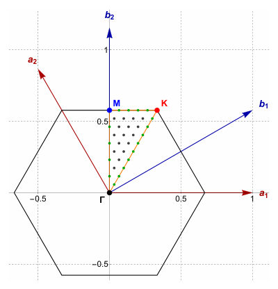
<figcaption class="paper-figure-caption"><b>Fig 1.</b> Figure 1: Hexagonal first Brillouin zone of the triangular Wigner-crystal lattice. The irreducible Γ–K–M wedge used for the Brillouin-zone sampling is indicated.</figcaption>
</figure>
<figure class="paper-figure-card">

<figcaption class="paper-figure-caption"><b>Fig 2.</b> Figure 2: Evolution of the fully spin-polarized Hartree–Fock Wigner-crystal solution with the density parameter rs. The four rows correspond to rs = 4, 10, 30, and 50, as indicated inside the panels. The columns show, from left to right, the initial charge-density configuration, the converged Hartree–Fock charge density, the same-spin Hartree–Fock band structure along Γ–K–M–Γ, and the static dielectric function εHF(q, 0) along Γ–K direction. The charge-density panels also indicate the first-star order parameter of the initial and converged configurations, denoted by Mini and Mfin, respectively. The sequence illustrates the evolution from a weakly crystalline solution at small rs toward...</figcaption>
</figure>
</div>

<p><strong>Summary.</strong> This work develops and applies a Hartree-Fock numerical method to study Wigner crystal formation in 2D transition metal dichalcogenides like WSe2. It calculates the static dielectric function, providing a quantitative measure of electronic screening within this highly correlated, insulating state. The results offer theoretical insight into how electron-electron interactions reconstruct band structure and govern charge response.</p>
<p><strong>Why it may be interesting.</strong> While focused on solid-state screening, the use of advanced many-body techniques like HF within a periodic supercell structure is relevant to understanding correlation effects beyond simple mean-field treatments common in AMO physics.</p>
<details>
<summary>Detailed structure</summary>
<p><strong>Main problem.</strong> The primary goal is to calculate the static dielectric function of a Wigner-crystal state formed in monolayer WSe2.</p>
<p><strong>Main result.</strong> The method successfully computes $\epsilon(\mathbf{q}, 0)$, showing that the system exhibits strong electronic screening characterized by a maximum at finite momentum transfer $q_{	ext{max}}$.</p>
<p><strong>Method.</strong> A self-consistent Hartree–Fock (HF) numerical method is employed to determine quasiparticle band structure and then calculate the static polarizability using a Lindhard-type sum over occupied and empty bands.</p>
<p><strong>Model / system.</strong> The system modeled is a two-dimensional electron gas forming a Wigner crystal in monolayer WSe2, treated as an insulating state with a periodic triangular lattice structure. The theory uses HF approximations to solve the electronic structure problem.</p>
<p><strong>Key observables.</strong> Static dielectric function $\epsilon(\mathbf{q}, 0)$, single-particle excitation spectra, and density harmonics ($\eta_{	ext{W}}(\mathbf{Q})$).</p>
<p><strong>Important parameters / regimes.</strong> Zero temperature ($T=0$), dimensionless Wigner-Seitz radius ($r_s$), momentum transfer $q$, and the lattice constant/periodicity.</p>
<p><strong>Assumptions / limitations.</strong> The ground state is assumed to be fully spin-polarized, and the calculations rely on the Hartree-Fock approximation for electron interactions.</p>
<p><strong>Figures summary.</strong> Figures illustrate the hexagonal first Brillouin zone of the triangular Wigner-crystal lattice, which dictates the momentum sampling ($\Gamma–K–M$ wedge).</p>
<p><strong>Paper structure.</strong> The paper develops from general Wigner crystal theory to establishing a self-consistent HF framework for crystalline states. It details the solution procedure (including initial guesses) and culminates in calculating the static dielectric response as a microscopic probe.</p>
</details>
<details>
<summary>Abstract</summary>
<p>We develop a Hartree-Fock numerical method for computing the band structure of a two-dimensional Wigner crystal in an electron gas at zero temperature. The ground state is assumed to be fully spin-polarized. Single-particle excitation spectra are evaluated in spin-conserving channel. As an application, we use the developed code to compute the static dielectric function epsilon(q,0) of a Wigner-crystal state formed in a two-dimensional transition-metal dichalcogenide, specifically monolayer WSe2. The dielectric response is obtained from the Hartree-Fock band structure and eigenfunctions through a static Lindhard-type polarizability. The method provides a theoretical tool for investigating screening, band-structure reconstruction, and interaction effects in low-density two-dimensional systems, with possible relevance for future experimental studies.</p>
</details>
<p><sub><a href="#top">↑ back to top</a></sub></p>

<p><a id="paper-2607.04654"></a></p>
<h3 id="quantum-geometric-friedel-oscillations"><a href="http://arxiv.org/abs/2607.04654v1">Quantum Geometric Friedel Oscillations</a></h3>
<p><strong>Authors:</strong> Xing-Lei MA, Jinchao Zhao, Bo-Qing Wu, K. T. Law<br>
<strong>Type:</strong> theory · <strong>Category:</strong> other · <strong>PDF:</strong> <a href="https://arxiv.org/pdf/2607.04654v1">https://arxiv.org/pdf/2607.04654v1</a><br>
<strong>Analysis basis:</strong> full PDF text, analyzed in chunks
<strong>Topic relevance:</strong> <code>Keldysh / 2PI / non-Gaussian methods</code> <strong>1/5</strong></p>
<div class="figure-strip-hint">↔ Scroll figures horizontally</div>
<div class="paper-figures-scroll">
<figure class="paper-figure-card">
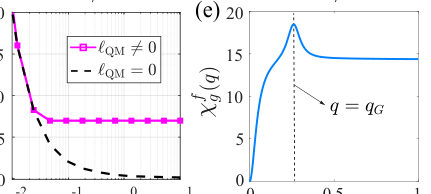
<figcaption class="paper-figure-caption"><b>Fig 1.</b> FIG. 1. Emergence and thermodynamic stability of quan- tum geometric Friedel oscillations (QGFOs) . (a) Schematic band structure in a flat-band metal. The color of the central band represents the quantum metric distribution Gf(k), as zoomed in on the right side. The momentum-space separa- tion between quantum metric hot spots defines the character- istic geometric wavevector qG. The Fermi level (dashed line) cuts through the flat band, with two Fermi points separated by wavevector 2kF . W f and ∆g denotes the flat-band band- width and the band gap, respectively. (b) Normalized real- space density modulations δρnorm(x) ≡δρ(x)/ρ0 induced by a local impurity. At low temperatures (blue curve),...</figcaption>
</figure>
<figure class="paper-figure-card">
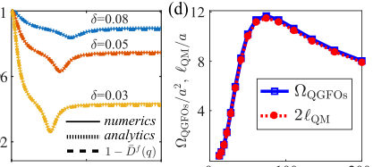
<figcaption class="paper-figure-caption"><b>Fig 2.</b> FIG. 2. (a) Band structure of the 1D flat-band model. In- set: Zoom-in of the flat band. The dashed line indicates the Fermi level; 2kF is the zero-temperature scattering wavevec- tor. Parameters are the same as Fig. 1 except δ = 0.05. These parameters are used throughout unless otherwise stated. (b) Quantum distance dk,k′ in the k-k′ plane. The red dashed lines mark the cut q = qG corresponding to the peak of ¯D(q). (c) Fourier transform of the LDOS variations δρnorm(q) for different δ. Solid lines: real-space diagonalization (numerics); dotted lines: full-band formalism in Eq. (2) with T = I (an- alytics). All curves match reasonably well with 1 −¯Df(q). A single impurity U0 = t is placed...</figcaption>
</figure>
<figure class="paper-figure-card">

<figcaption class="paper-figure-caption"><b>Fig 3.</b> FIG. 3. (a) Comparison of QGFOs with distinct low-energy quantum geometric structures: Quantum metric hot spots living within (Blue curves) versus far above (Red curves) the smeared Fermi surface. Inset: corresponding Fourier spec- trum. (b) Partially averaged quantum distance ¯Df p(q) for the two regimes. Parameters for the blue curves are the same as Fig. 1 except kBT = Ef F = 0.4t, U0 = 10t, and Λc = 3.5kBT. The red curve has the same parameters as the blue one except t taking a minus sign.</figcaption>
</figure>
<figure class="paper-figure-card">

<figcaption class="paper-figure-caption"><b>Fig 4.</b> FIG. 4. Real-space lattice and hopping structure of the 1D model. The dashed square denotes an unit cell.</figcaption>
</figure>
<figure class="paper-figure-card">

<figcaption class="paper-figure-caption"><b>Fig 5.</b> FIG. 5. (a) Band structure of the 2D model. (b) Fermi surface of the third band. Parameters: J = 1, t = 10−4J, δ′ = 5δ, µ = −0.48W f with bandwidth W f = 8t.</figcaption>
</figure>
</div>

<p><strong>Summary.</strong> This work introduces Quantum Geometric Friedel Oscillations (QGFOs), showing they arise when the quantum geometry of Bloch wavefunctions is non-trivial. Unlike conventional oscillations whose decay is temperature-sensitive, QGFOs are governed by a robust 'quantum metric length.' Measuring these oscillations provides a novel tool to probe fundamental geometric properties of electronic band structures.</p>
<p><strong>Why it may be interesting.</strong> The concept of 'quantum metric protection' suggests a fundamental, geometry-derived robustness in electronic responses that is independent of thermal smearing or simple Fermi surface arguments, which has implications for topological materials physics.</p>
<details>
<summary>Detailed structure</summary>
<p><strong>Main problem.</strong> The conventional theory of Friedel oscillations is incomplete when considering Bloch wavefunctions with nontrivial quantum geometry, necessitating the characterization of a new oscillation type.</p>
<p><strong>Main result.</strong> Quantum Geometric Friedel Oscillations (QGFOs) exist, characterized by a period set by momentum space hot spot separations and possessing a decay length protected by the quantum metric, allowing them to persist at higher temperatures than conventional oscillations.</p>
<p><strong>Method.</strong> The analysis involves decomposing the total susceptibility into conventional and quantum geometric parts ($\chi_f = \chi^c_f + \chi^g_f$) and calculating the induced density modulation $\delta
ho(r)$ using flat-band susceptibility formulas.</p>
<p><strong>Model / system.</strong> The study uses models of metals, specifically focusing on systems exhibiting isolated (nearly) flat bands at the Fermi energy. Calculations are performed using tight-binding models in 1D and 2D lattices.</p>
<p><strong>Key observables.</strong> QGFOs (oscillations), quantum metric length ($\ell_{QM}$), momentum space separation of hot spots ($q_G$), and the decay length $\xi$.</p>
<p><strong>Important parameters / regimes.</strong> Temperature ($T$) relative to bandwidth ($W_f$), impurity strength ($U_0$), and topological invariants like the Chern number ($|C|$).</p>
<p><strong>Assumptions / limitations.</strong> The theory assumes weak impurities, allowing for certain approximations in the susceptibility calculation.</p>
<p><strong>Figures summary.</strong> Figures illustrate schematic band structures, real-space density modulations ($\delta
ho(x)$) at varying temperatures, and Fourier spectra showing both conventional ($2k_F$) and QGFO peaks. The decay length vs. T plots show a transition from thermal to quantum metric control.</p>
<p><strong>Paper structure.</strong> The paper progresses by first identifying the theoretical gap in conventional theory, then deriving the quantum geometric susceptibility ($\chi^g_f$), demonstrating its distinct characteristics (periodicity $q_G$, temperature-independent decay $\ell_{QM}$), and finally confirming these predictions using 1D and 2D lattice models.</p>
</details>
<details>
<summary>Abstract</summary>
<p>In conventional Friedel oscillations, the real-space charge density oscillations induced by an impurity are characterized by an oscillation period set by the Fermi momentum. In this work, we show that the conventional theory is incomplete when the Bloch wavefunctions carry nontrivial quantum geometry. We demonstrate that in metals with an isolated (nearly) flat band at the Fermi energy, quantum geometry induces a distinct type of oscillations, which we call the \emph{quantum geometric Friedel oscillations} (QGFOs). The period of the QGFOs is set by the momentum space separation of the quantum metric hot spots of the flat band. The conventional and quantum metric-induced oscillations coexist at low temperatures. At higher temperatures, the conventional Friedel oscillations away from the impurity site are set by the thermal length such that the oscillations can be easily washed out by temperature effects. Remarkably, the QGFOs decay length is set by the quantum metric length which is defined by the integration of the quantum metric of the flat band. As a result, the QGFOs can persist even at temperatures much larger than the bandwidth of the flat band. Moreover, the decay length is independent of temperature for a wide range of temperatures which is a manifestation of the quantum metric protection. In conclusion, we show that the quantum metric induces novel Friedel oscillations. Our work suggests that the measurement of the QGFOs is a powerful way to detect the quantum metric length (which is associated with the integral of the quantum metric) and the quantum metric hot spot separations (which are associated with the distribution of the quantum metric in the momentum space).</p>
</details>
<p><sub><a href="#top">↑ back to top</a></sub></p>

<p><a id="paper-2607.04651"></a></p>
<h3 id="topological-electronic-states-and-phonon-mediated-superconductivity-in-ru-based-ternary-pnictides-zrruas-and-hfrup"><a href="http://arxiv.org/abs/2607.04651v1">Topological Electronic States and Phonon Mediated Superconductivity in Ru Based Ternary Pnictides: ZrRuAs and HfRuP</a></h3>
<p><strong>Authors:</strong> Jubair Hossan Abir, Tanvir Khan, Tauhidur Rahman, Md. Kamrul Hassan, Sraboni Saha Moly, Mst. Maskura Khatun, Raihana Shams Islam, Saleh Hasan Naqib<br>
<strong>Type:</strong> theory · <strong>Category:</strong> other · <strong>PDF:</strong> <a href="https://arxiv.org/pdf/2607.04651v1">https://arxiv.org/pdf/2607.04651v1</a><br>
<strong>Analysis basis:</strong> full PDF text, analyzed in chunks
<strong>Topic relevance:</strong> <code>Keldysh / 2PI / non-Gaussian methods</code> <strong>1/5</strong></p>
<div class="figure-strip-hint">↔ Scroll figures horizontally</div>
<div class="paper-figures-scroll">
<figure class="paper-figure-card">

<figcaption class="paper-figure-caption"><b>Fig 1.</b> Figure 1. Schematic 3D representation of layered Crystal structures of ZrRuAs and HfRuP.</figcaption>
</figure>
<figure class="paper-figure-card">

<figcaption class="paper-figure-caption"><b>Fig 2.</b> Figure 2. (a) and (b) illustrate the 2D electron density difference (EDD) contour maps of the Ru- Zr-As and Ru-Hf-P systems, respectively. The color scale represents the degree of electron accumulation and depletion within the crystal structure. In the contour maps, the blue regions correspond to electron accumulation, whereas the yellow/red regions indicate electron depletion, demonstrating the redistribution of charge caused by chemical bonding and orbital hybridization among the constituent atoms.</figcaption>
</figure>
<figure class="paper-figure-card">

<figcaption class="paper-figure-caption"><b>Fig 3.</b> Figure 2. The electron density difference maps for (a) ZrRuAs and (b) HfRuP.</figcaption>
</figure>
<figure class="paper-figure-card">
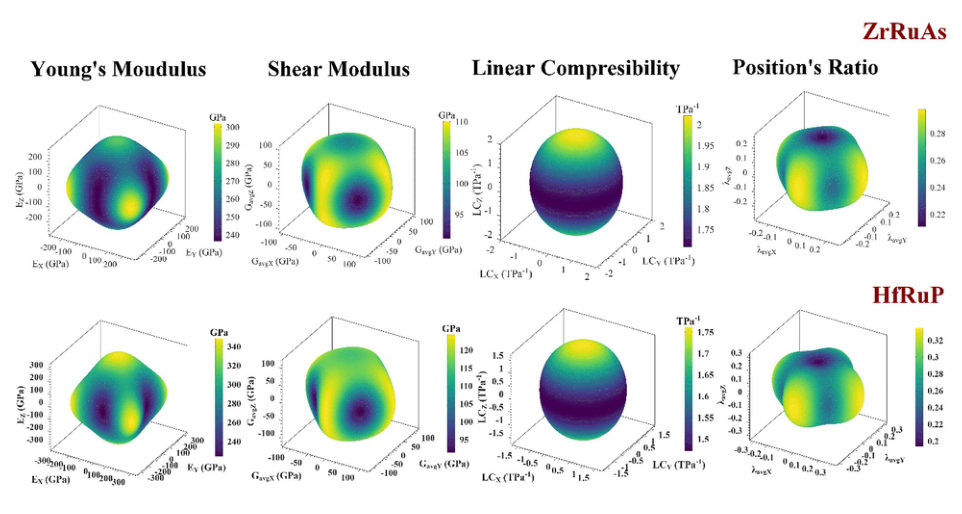
<figcaption class="paper-figure-caption"><b>Fig 4.</b> Figure 3. 3D representation of the mechanical properties of ZrRuAs and HfRuP in terms of Young’s modulus, Shear modulus, Linear compressibility and Poisson’s ratio.</figcaption>
</figure>
<figure class="paper-figure-card">

<figcaption class="paper-figure-caption"><b>Fig 5.</b> Figure 4. Calculated electronic band Structure of ZrRuAs and HfRuP without and with SOC.</figcaption>
</figure>
</div>

<p><strong>Summary.</strong> This paper computationally analyzes the structural, electronic, and superconducting properties of ZrRuAs and HfRuP. Using DFT, the authors confirm their topological semimetallic nature and ductile mechanical behavior. The study successfully predicts moderate critical temperatures, suggesting these materials are promising candidates for topological superconductors.</p>
<p><strong>Why it may be interesting.</strong> While focused on condensed matter solid-state physics rather than AMO systems, the use of advanced DFT methods to predict multiple coupled physical phenomena (topology, elasticity, superconductivity) is methodologically relevant for complex quantum material modeling.</p>
<details>
<summary>Detailed structure</summary>
<p><strong>Main problem.</strong> The study investigates the comprehensive physical properties, including electronic structure, mechanical stability, and superconductivity, of two ternary pnictides: ZrRuAs and HfRuP.</p>
<p><strong>Main result.</strong> Both compounds exhibit topological semimetallic behavior and are predicted to be ductile with excellent machinability. They show evidence of conventional superconductivity with transition temperatures around 9-10 K.</p>
<p><strong>Method.</strong> The research relies heavily on first-principles calculations using Density Functional Theory (DFT) for electronic, structural, mechanical, and superconducting property predictions.</p>
<p><strong>Model / system.</strong> The physical systems are the crystalline materials ZrRuAs and HfRuP, which are analyzed across multiple facets: band structure, elastic constants, electron density difference maps, and electron-phonon coupling calculations.</p>
<p><strong>Key observables.</strong> Topological semimetallic behavior, superconducting transition temperatures (Tc), Pugh's ratio, Poisson’s ratio, bulk/shear moduli, and electronic charge redistribution patterns.</p>
<p><strong>Important parameters / regimes.</strong> The calculation utilized PBE-GGA functional within DFT framework; the predicted Tc values are 9.75 K for ZrRuAs and 9.03 K for HfRuP.</p>
<p><strong>Assumptions / limitations.</strong> Phonon calculations were performed without including spin-orbit coupling, assuming its effect on vibrational properties is negligible.</p>
<p><strong>Figures summary.</strong> Figure 1 shows the layered crystal structures; Figure 2 displays Electron Density Difference (EDD) maps illustrating charge bonding character; Tables summarize optimized lattice parameters and mechanical constants.</p>
<p><strong>Paper structure.</strong> The paper follows a structure of initial structural/electronic analysis, followed by detailed investigation into mechanical properties using elastic constants, and concluding with the determination of superconducting characteristics via electron-phonon coupling calculations.</p>
</details>
<details>
<summary>Abstract</summary>
<p>This study investigates the structural, electronic, mechanical, optical, thermodynamic, and superconducting properties of ZrRuAs and HfRuP. Electronic band structure calculations reveal topological semimetallic behavior in both compounds with several bands crossing the Fermi level. The inclusion of spin orbit coupling lifts band degeneracies in both compounds. The Fermi surface shows both electron and hole segments. The estimated Pugh ratio, Poisson ratio and machinability index indicate that both compounds are ductile in nature and exhibit excellent machinability. Optical results show metallic reflectivity and notable absorption in the ultraviolet region. Thermodynamic analysis indicates stable behavior. The estimated superconducting transition temperatures are 9.75 K for ZrRuAs and 9.03 K for HfRuP that indicates strong coupling conventional superconductivity. The results provide a detailed view of the physical and superconducting properties of ZrRuAs and HfRuP and help to close the existing research gaps in these topological superconducting materials.</p>
</details>
<p><sub><a href="#top">↑ back to top</a></sub></p>
<h3 id="other-secondary-papers-2">Other secondary papers (2)</h3>
<details>
<summary>Show other secondary papers</summary>

<p><a id="paper-2607.03706"></a></p>
<h3 id="correlated-electron-theory-of-triplet-triplet-multiexciton-states-in-polypentacene"><a href="http://arxiv.org/abs/2607.03706v1">Correlated-Electron Theory of Triplet-Triplet Multiexciton States in Polypentacene</a></h3>
<p><strong>Authors:</strong> Rupali Jindal, Alok Shukla, Sumit Mazumdar<br>
<strong>Type:</strong> theory · <strong>Category:</strong> strongly correlated electrons · <strong>PDF:</strong> <a href="https://arxiv.org/pdf/2607.03706v1">https://arxiv.org/pdf/2607.03706v1</a><br>
<strong>Analysis basis:</strong> full PDF text, analyzed in chunks</p>
<div class="figure-strip-hint">↔ Scroll figures horizontally</div>
<div class="paper-figures-scroll">
<figure class="paper-figure-card">
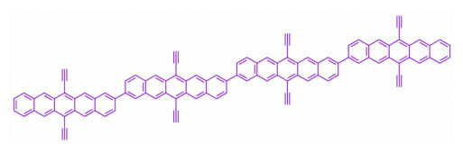
<figcaption class="paper-figure-caption"><b>Fig 1.</b> FIG. 2. Pentacene tetramer 4Pc with the anti-anti-anti inter- monomer bonding motif.</figcaption>
</figure>
<figure class="paper-figure-card">

<figcaption class="paper-figure-caption"><b>Fig 2.</b> FIG. 1. Schematics of two different conceptualizations of triplet-triplet eigenstates of 4Pc (see text). Red and blue horizontal bars correspond to HOMO and LUMO of Pc monomers, doubly or singly occupied by electrons. Arrows on singly occupied MOs indicate electron spins. Bonding (antibonding) MOs not shown are completely filled (empty). (a) Individual configurations are eigenstates, and triplet sep- aration occurs along the indicated path. (b) Eigenstates are quantum superpositions of configurations with different rela- tive weights ci.</figcaption>
</figure>
<figure class="paper-figure-card">

<figcaption class="paper-figure-caption"><b>Fig 3.</b> FIG. 3. Calculated ground state absorption spectra of nPc, n = 2-4. Si, i=1-4, label the different absorption bands (see Fig. 4)</figcaption>
</figure>
<figure class="paper-figure-card">

<figcaption class="paper-figure-caption"><b>Fig 4.</b> FIG. 4. Normalized exciton basis wavefunctions of final eigenstates to which ground state absorption occurs in 3Pc (left) and 4Pc (right). S1 - S4 correspond to the absorption bands labeled in Fig. 3. Red and blue horizontal bars represent bonding and antibonding MOs, respectively, which can be doubly or singly occupied by electrons. Straight or curved lines connecting MOs represent spin-singlet excitations. Ellipses correspond to configurations related by spatial and charge-conjugation symmetries. Filled (empty) bonding (antibonding) MOs are not shown.</figcaption>
</figure>
<figure class="paper-figure-card">

<figcaption class="paper-figure-caption"><b>Fig 5.</b> FIG. 5. 1(T1T1) eigenstates of 3Pc.</figcaption>
</figure>
</div>
<p><strong>Summary.</strong> The authors theoretically analyze the multiexciton states in polypentacene oligomers using sophisticated correlated-electron calculations. They demonstrate that the triplet-triplet excited states are highly delocalized quantum superpositions rather than localized pairs. This finding explains why experimental measurements suggest no discrete intramolecular triplet diffusion, challenging previous models of exciton behavior.</p>
<p><strong>Why it may be interesting.</strong> This work directly addresses excited-state dynamics in organic semiconductors using advanced correlated electron methods, providing insights into charge/exciton localization and transport mechanisms relevant to molecular electronics and quantum energy conversion.</p>
<details>
<summary>Detailed structure</summary>
<p><strong>Main problem.</strong> The study investigates the nature of triplet-triplet multiexciton states (1(T1T1)) in acene oligomers to determine if intramolecular triplet separation is physically possible.</p>
<p><strong>Main result.</strong> The 1(T1T1) eigenstates are quantum superpositions of configurations spanning all accessible intertriplet separations, explaining the apparent absence of discrete intramolecular triplet diffusion.</p>
<p><strong>Method.</strong> Correlated-electron calculations using the Pariser-Parr-Pople (PPP) Hamiltonian solved via Multiple-Reference Singles and Doubles Configuration Interaction (MRSDCI).</p>
<p><strong>Model / system.</strong> The model uses three- and four-unit pentacene oligomers as microscopic representations of polypentacene. The calculations employ a molecular exciton basis to resolve different excitation types.</p>
<p><strong>Key observables.</strong> Optical spin-singlet and triplet-triplet multiexciton states; Excited State Absorption (ESA) spectra from 1(T1T1) eigenstates; Triplet binding energy.</p>
<p><strong>Important parameters / regimes.</strong> Onsite Hubbard repulsion U = 6.7 eV; The system size varies from 2 to 4 pentacene units.</p>
<p><strong>Assumptions / limitations.</strong> Electron-vibration interactions are neglected, and the MRSDCI method approximates the inclusion of necessary quadruple excitations.</p>
<p><strong>Figures summary.</strong> Figures schematically compare localized-pair vs. configuration-mixed descriptions of eigenstates; specific figures illustrate intermonomer Charge Transfer (CT) channels responsible for labeled ESA peaks in 4Pc.</p>
<p><strong>Paper structure.</strong> The paper develops by first establishing the theoretical framework using PPP/MRSDCI, then calculating and analyzing the nature of the 1(T1T1) eigenstates, comparing these findings to experimental TA data, and finally concluding on the implications for triplet diffusion and singlet fission.</p>
</details>
<details>
<summary>Abstract</summary>
<p>We present correlated-electron calculations of optical spin-singlet and triplet-triplet multiexciton states in three- and four-unit pentacene oligomers as microscopic models for polypentacene. The calculations use the Pariser-Parr-Pople Hamiltonian, multiple-reference singles and doubles configuration interaction, and a molecular exciton basis that resolves Frenkel, charge-transfer, and triplet-pair (T1T1) configurations in real space. We find that the complete set of 1(T1T1) eigenstates lies in a narrow, nearly degenerate energy window near the lowest optical exciton and that no eigenstate can be identified with a single localized triplet-pair configuration. Instead, each triplet-pair eigenstate is a quantum superposition of configurations containing all accessible intertriplet separations. This electronic structure explains the perceived absence of intramolecular triplet diffusion in pentacene oligomers, polypentacene, and polytetracene solutions, while leaving open the possibility of intermolecular singlet fission in films with appreciable interchain interactions.</p>
</details>
<p><sub><a href="#top">↑ back to top</a></sub></p>

<p><a id="paper-2607.03712"></a></p>
<h3 id="tuning-superconductivity-by-isovalent-antimony-substitution-in-prfeasof"><a href="http://arxiv.org/abs/2607.03712v1">Tuning Superconductivity by Isovalent Antimony Substitution in PrFeAs(O,F)</a></h3>
<p><strong>Authors:</strong> Priya Singh, Konrad Kwatek, Tatiana Zajarniuk, Taras Palasyuk, Cezariusz Jastrzębski, Michał Wierzbicki, Tomasz Cetner, Andrzej Szewczyk, Shiv J. Singh<br>
<strong>Type:</strong> both · <strong>Category:</strong> strongly correlated electrons · <strong>PDF:</strong> <a href="https://arxiv.org/pdf/2607.03712v1">https://arxiv.org/pdf/2607.03712v1</a><br>
<strong>Analysis basis:</strong> full PDF text, analyzed in chunks</p>
<div class="figure-strip-hint">↔ Scroll figures horizontally</div>
<div class="paper-figures-scroll">
<figure class="paper-figure-card">

<figcaption class="paper-figure-caption"><b>Fig 1.</b> Low-resolution page preview, page 2</figcaption>
</figure>
<figure class="paper-figure-card">

<figcaption class="paper-figure-caption"><b>Fig 2.</b> Low-resolution page preview, page 3</figcaption>
</figure>
<figure class="paper-figure-card">
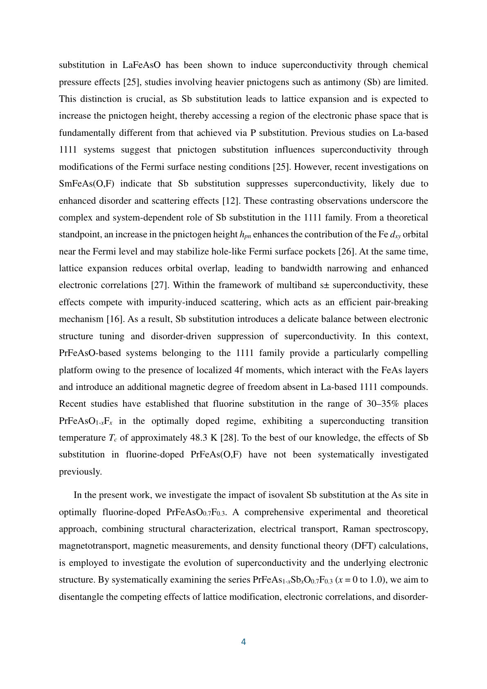
<figcaption class="paper-figure-caption"><b>Fig 3.</b> Low-resolution page preview, page 4</figcaption>
</figure>
<figure class="paper-figure-card">

<figcaption class="paper-figure-caption"><b>Fig 4.</b> Low-resolution page preview, page 5</figcaption>
</figure>
<figure class="paper-figure-card">
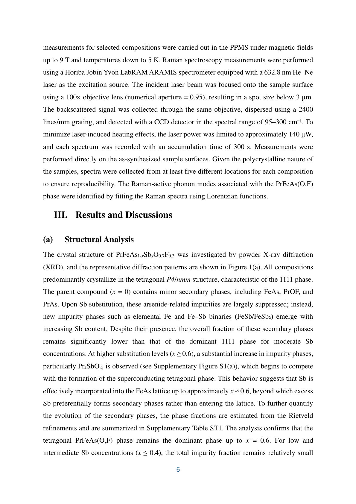
<figcaption class="paper-figure-caption"><b>Fig 5.</b> Low-resolution page preview, page 6</figcaption>
</figure>
</div>
<p><strong>Summary.</strong> This work systematically investigates how substituting Antimony (Sb) into the As site of $ ext{PrFeAs}(    ext{O}, ext{F})$ affects superconductivity. Using combined techniques like magnetotransport, Raman spectroscopy, and DFT, the researchers map out a doping phase diagram showing that while Sb substitution initially tunes superconducting properties, excessive doping leads to disorder-dominated suppression of $T_c$. It highlights the complex interplay between lattice modification and electronic pairing mechanisms in these materials.</p>
<p><strong>Why it may be interesting.</strong> The study provides a detailed experimental roadmap for tuning superconductivity in strongly correlated iron-based superconductors by controlling disorder via isovalent substitution. The competition between electronic tuning and structural/disorder effects is a key theme in condensed matter physics.</p>
<details>
<summary>Detailed structure</summary>
<p><strong>Main problem.</strong> The study investigates how isovalent Antimony (Sb) substitution affects superconductivity in iron pnictides, specifically $   ext{PrFeAs}(    ext{O}, ext{F})$. The goal is to understand the interplay between electronic tuning and structural disorder.</p>
<p><strong>Main result.</strong> Superconductivity exhibits a crossover from an electronically tuned state at low doping to a regime dominated by disorder scattering as Sb concentration increases. While upper critical fields are enhanced, the overall superconducting performance degrades due to increasing lattice disorder and secondary phases.</p>
<p><strong>Method.</strong> The research employs a comprehensive multiscale approach combining structural characterization (XRD), vibrational analysis (Raman spectroscopy), electrical transport measurements (magnetotransport up to 9 T), magnetic measurements, and theoretical calculations (DFT).</p>
<p><strong>Model / system.</strong> The physical system is the iron pnictide superconductor $   ext{PrFeAs}<em 0.7>{1-x}   ext{Sb}_x   ext{O}</em>$, which crystallizes in a tetragonal structure. The study systematically varies the Sb concentration ($x$) to probe doping effects.}    ext{F}_{0.3</p>
<p><strong>Key observables.</strong> Superconducting transition temperature ($T_c$), upper critical fields ($H_{c2}$), vortex activation energy, lattice parameters (especially $c$-axis expansion), and phonon mode softening.</p>
<p><strong>Important parameters / regimes.</strong> Doping concentration ($x$ of Sb substitution), magnetic field strength ($  ext{up to } 9   ext{ T}$), and temperature range ($ ext{down to } 5     ext{ K}$).</p>
<p><strong>Assumptions / limitations.</strong> The primary limitation noted is the low critical current density, attributed to poor intergranular connectivity. The analysis assumes that structural changes (lattice expansion) and electronic effects are separable tuning mechanisms.</p>
<p><strong>Figures summary.</strong> Figures summarize XRD results showing lattice parameter evolution; Raman spectra track phonon softening related to Sb incorporation; transport measurements show $T_c$ dependence on doping and magnetic field; and TAFF analysis quantifies vortex pinning energy.</p>
<p><strong>Paper structure.</strong> The paper follows a systematic investigation: first, structural characterization (XRD/EDX) establishes the phase purity and lattice changes with doping. Second, Raman spectroscopy probes vibrational modes to understand local bonding changes. Finally, transport and magnetic measurements quantify the superconducting response ($T_c$, $H_{c2}$, $J_c$) across the doped series.</p>
</details>
<details>
<summary>Abstract</summary>
<p>We investigate the effects of isovalent Sb substitution at the As site in fluorine-doped PrFeAs1-xSbxO0.7F0.3 (x = 0 to 1.0) through structural, Raman spectroscopy, density functional theory (DFT), transport, magnetotransport, and magnetic measurements. The superconducting transition temperature decreases gradually from ~48 K for the parent compound to ~44 K up to x = 0.3, followed by a rapid suppression at higher Sb concentrations due to increasing disorder and secondary phase formation. Raman spectroscopy and DFT reveal lattice expansion and pronounced softening of pnictogen related vibrational modes upon Sb substitution. Magnetotransport measurements up to 9 T show enhanced upper critical fields and increased vortex activation energy for moderate Sb doping, indicating stronger vortex pinning. However, the critical current density remains low because of poor intergranular connectivity. The results demonstrate a crossover from an electronically tuned superconducting state to a disorder-dominated regime in isovalently substituted iron pnictides.</p>
</details>
<p><sub><a href="#top">↑ back to top</a></sub></p>
</details>

<hr>
<p>
<a href="index.html">← Index</a>
 · <a href="papers_08.html">← Previous</a>
</p>
<hr>

</body>
</html>
